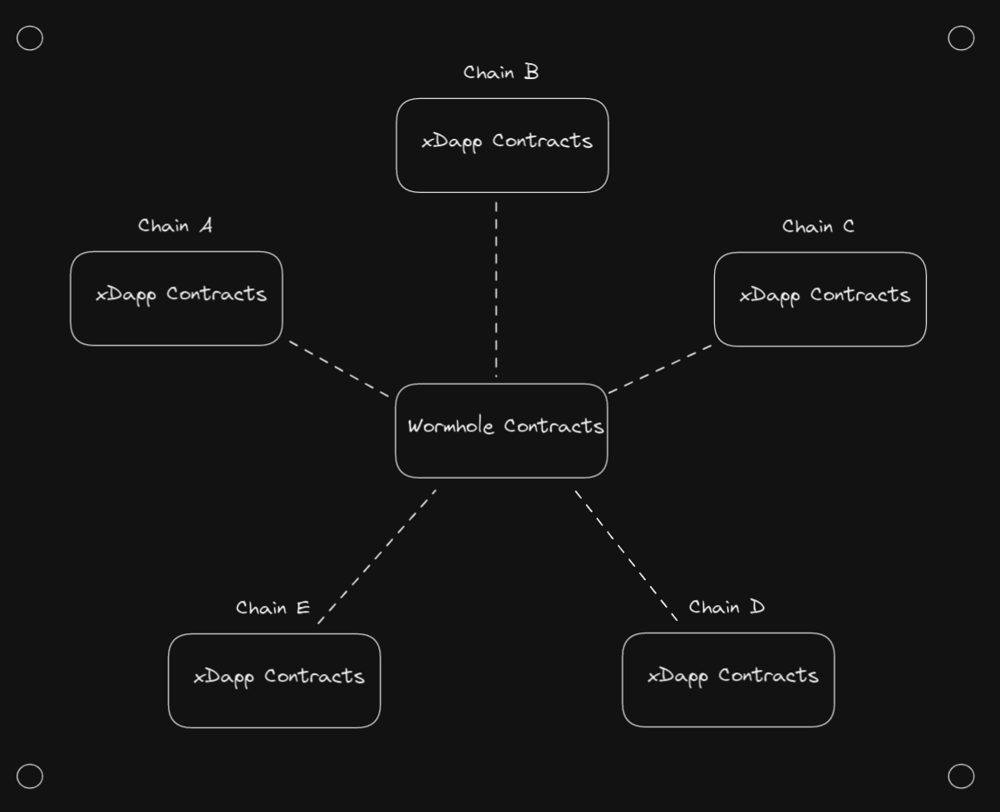

Warning: Some content may be outdated. See docs.wormhole.com for up to date information
Introduction
Welcome to the Wormhole xDapp Book!
This guide aims to help you in your journey as a cross-chain developer by explaining the core concepts of Wormhole and xDapp development.
We'll start by outlining the most important aspects of Wormhole and the considerations which must be taken when developing an xDapp. After that, the second portion of the book helps you set up a development environment and get started writing actual code. By the end of this guide, you should be ready to build and deploy your first xDapp.
While this document doesn't assume you have experience with any particular technologies, a general understanding of blockchain development will help you get up to speed.
Ready to step into the wormhole?
For additional resources, see the Reference section.
An Introduction to xDapps
This chapter aims to give you a clear understanding of what xDapps are and why they're gaining traction in the blockchain development community.
To start, let's go over the current state of the decentralized finance (De-Fi) ecosystem, the emerging role of xDapps and the advantages they have over conventional Dapps.
Ecosystem Basics
Since the launch of Bitcoin in 2009, the cryptocurrency and decentralized computing ecosystem has rapidly evolved and expanded. The ecosystem now includes hundreds of blockchains, often also referred to as Layer 1s.
Prior to 2015, blockchain transactions were limited in their capacities, typically being used to transfer funds from one user to another. This changed with the introduction of Ethereum and smart contracts. Smart contracts allowed developers to perform arbitrary on-chain computation as part of a blockchain transaction, opening the door for blockchain technology to become a global computing platform. These innovations laid the groundwork for the creation of Decentralized Applications or Dapps.
Now, a rich ecosystem of Dapps exists across an array of smart-contract-enabled blockchains. These Dapps provide a number of services across categories like:
- Decentralized Exchanges (DEXs)
- Decentralized Autonomous Organizations (DAOs)
- Borrow-Lend Platforms
- Decentralized Games
- NFT Protocols
- Metaverse Platforms
- and more
However, Dapps are not without limitations, many of which are tied to their underlying blockchains.
Two notable limitations are that blockchains have no access to off-chain data and no mechanism to interact with other blockchains. These limitations have led to a fractured ecosystem, where each blockchain is closed off from the others by default. That means assets native to one chain are not accessible on another, and some services can't be leveraged on particular chains altogether.
Blockchain developers are now aiming to solve these interoperability problems to create a unified ecosystem. In this new cross-chain ecosystem, people can move beyond being users of individual blockchains and take advantage of Web3 on a broader scale.
In the next section, we'll discuss the history and challenges of cross-chain interoperability, as well as introduce the role Wormhole plays in the future of this space.
Blockchain Interoperability
Because blockchains are siloed by nature, individual cryptocurrencies being bound to their own chains has been a longtime limitation of blockchain technology. The first attempt at solving this problem was the creation of cryptocurrency exchanges like Coinbase and Binance. Today these are referred to as centralized exchanges (CEXs).
Centralized exchanges play an important role in cryptocurrency, but they are not a complete solution for blockchain interoperability for two primary reasons: (1) they're centralized, which is counterproductive to creating a decentralized platform, and (2) they deal only with tokens.
To solve the centralization problems with CEXs, decentralized exchanges (DEXs) were created. A DEX operates inside a smart contract runtime and can be as decentralized as the blockchain it runs on. Unfortunately, a DEX is only able to utilize the tokens on its native blockchain. In order to obtain a token which is not native to that chain, the DEX must be used in combination with a bridge.
Bridges are complex and will be discussed at length in a later section. For now, we can categorize bridges as applications which 'lock' assets on one chain in exchange for wrapped assets on another chain. The wrapped assets can then be exchanged for the original 'backing' asset.
There are some other essential things you should know about bridges before going further:
- Bridges are capable of being decentralized in theory, but are often quite centralized in practice.
- Bridges are currently the only way to hold a token on a chain other than its 'native' chain. If you're holding ETH on a chain other than Ethereum, it is, by definition, a wrapped token.
- Bridges are all mutually incompatible with each other. Using multiple bridges just makes 'double wrapped' tokens.
- If tokens have become double wrapped after traversing multiple bridges or blockchains, there can be a complex unwrapping process to get back to the original token.
This explains how the ecosystem arrived at its current state -- CEXs are a solution to siloed blockchains, DEXs are a simple response to CEXs, and DEXs have created a demand for bridges. Each solution in this timeline is an ad-hoc patch to the previous problem, and the current landscape of fractured liquidity, double wrapped tokens, isolated user bases and wallet incompatibilities is the result.
Adding to this complexity are blockchains moving toward being general-purpose computing platforms. As such, interoperability will require data structures that are more complex than tokens and operations that are more sophisticated than transfers.
More ad-hoc solutions would only be short-term fixes for long-term problems, so it's critical to design new primitives and core infrastructure that will allow the next generation of decentralized applications to move beyond these lingering limitations.
This is why Wormhole exists. Wormhole proposes a new way of developing applications which leverages the strengths of each blockchain while mitigating the problems of the current ecosystem.
Rethinking the next generation of decentralized applications means dethroning the token as the fundamental atomic unit of blockchains. We'll expand on this change in the next section.
xData and xAssets
High on the wishlist of blockchain features is the ability to detach tokens from their native chains. It is a tremendous limitation that ETH only exists on Ethereum, MATIC only exists on Polygon and SOL only exists on Solana. It would be far more useful if those assets were able to move freely, independent of their native blockchains.
That thought underpins the idea of an xAsset, which could be considered a next-generation wrapped token. In a sense, xAssets exist on a layer outside of the blockchain ecosystem, and so are able to transact on a variety of blockchains. An xAsset is chain- and path- agnostic, so it retains fungibility regardless of where it travels. xAssets can also move fluidly around the blockchain ecosystem without ever becoming double-wrapped.
Now that we've established the idea of an xAsset, you might think they're an excellent atomic unit for solving interoperability challenges. However, xAssets are just one step short of the real solution. Let's take a step back: blockchains now process arbitrary data, and some of that data just happens to represent assets. The full solution then, is to create xData.
xData is akin to an xAsset in that it exists in its own layer independent of any blockchain, which makes xData accessible by all blockchains. The difference is that xData represents arbitrary data rather the token information represented by an xAsset.
Cross-chain interoperability then becomes a matter of creating, consuming and managing xData. Once blockchains have the ability to read and write data into a shared, global reservoir, application design can take on innovative new dimensions.
Later in this document, we'll delve deeper into how Wormhole implements this xData layer (also referred to as the 'Core' layer of Wormhole), but for now let's talk about how xData can be used to create xDapps.
What is an xDapp?
The term xDapp is short for "Cross-Chain Decentralized Application". At first glance, this might give the impression that xDapps are simply Dapps that do cross-chain things. However, once you start building decentralized products designed to operate across a variety of blockchains and runtimes, it becomes clear that these applications are architected in a fundamentally different way than traditional Dapps.
xDapps have the capacity to perform all the operations of traditional Dapps, but they are also able to utilize xData. xData allows xDapp developers to build from a top-down, message-passing approach, rather than the bottom-up world of Dapp development. The Wormhole Core Layer implements xData, which acts as a shared repository of data across the entire Wormhole ecosystem.
Something we'll explore further in the upcoming xDapp Architecture chapter is the philosophy of Protocol-First Design. Protocol First Design is an approach to building decentralized applications where the first order of business is to lay out your application into a series of data structures, APIs and message payloads. Once you've laid out your application into a high-level protocol, the protocol acts as an agreement to which all components must adhere. From there, the smart contracts underlying the protocol can be considered an implementation detail.
If you're familiar with web2 development, you might notice that this philosophy is analogous to microservice architecture. This is no coincidence, as similar problems should expect to be solved by similar solutions, and the Wormhole Core Layer has a number of parallels to the OSI Network Model.
Thus, a more fitting depiction of xDapps might be to see them as Distributed Decentralized Applications with multiple, specialized components working in unison to deliver a smooth, unified user experience across a variety of layer 1 ecosystems.
In the next section, we'll summarize the concrete advantages which xDapps built on Wormhole have over traditional Dapps today.
Advantages of xDapps
Here are a few xDapp features that are making an impact across blockchain technologies:
-
Expanded User Base - Rather than being limited to the users of one blockchain, any user on any blockchain in the ecosystem can interact with an xDapp.
-
Unified Liquidity - Liquidity fragmentation is a major problem in the current ecosystem. Unlike traditional tokens, xAssets can be pooled and moved anywhere.
-
Decentralization - Cross-chain solutions today usually involve centralized exchanges or bridges. However, Wormhole has been designed to be decentralized from day one, and eventually totally trustless.
-
Increased Performance - xDapps are able to utilize the strengths of each blockchain. With xDapps, expensive computations can be offloaded onto high-performance platforms, final settlement can take place on a preferred chain, and data can be stored wherever is cheapest.
-
Broader Market Reach - Because xAssets move freely through the ecosystem, they can be listed on a variety of exchanges and custodied on any blockchain.
-
Increased Extensibility and Composability - xDapps can utilize anything across the ecosystem, including other xDapps, expanding upon the composability and openness of smart contracts.
-
Futureproofing - As new environments and protocols join the decentralized ecosystem, the connected nature of the Wormhole ecosystem allows existing protocols to expand and support them.
Now that you have an understanding of what xDapps are and the advantages they offer, let's move on to the next chapter where we will delve into how Wormhole works and how it enables the creation of these next-generation protocols.
Wormhole
In the previous chapter, we established concepts like xDapps, xData and xAssets. In this chapter, we'll focus on the inner workings of the Wormhole ecosystem and how they power these ideas.
By the end of this chapter, you'll have a clear understanding of what Wormhole is, what its key components are and how each component comes together to create a powerful, new cross-chain ecosystem.
What is Wormhole?
Wormhole V1 was introduced in 2020 by Certus One and was initially conceived as a traditional token bridge between Ethereum and Solana. It served as the first bridge on Solana and was responsible for bootstrapping a large amount of the liquidity in the early Solana and Serum ecosystems.
However, despite its beginnings as a token bridge, Wormhole quickly grew beyond Solana and token transfers.
Wormhole v2 launched in August 2021 as a decentralized generic interoperability protocol for multiple blockchain ecosystems with initial support for Solana, Terra, Ethereum and Binance Smart Chain.
Over the past year, Wormhole has evolved to support an ever-growing list of blockchains across an unrivaled number of smart contract runtimes.
While Wormhole is a generic interoperability protocol, it is also an ecosystem and platform for developers to grow the decentralized computing space. Wormhole consists of multiple modular swap-in components that can be leveraged independently and supports an increasing number of composable applications built by numerous teams.
In the next section, we'll go over the major components of the Wormhole ecosystem and how they fit together to enable the cross-chain functionality required to develop xDapps.
Architecture Overview
Wormhole is a complex ecosystem with several noteworthy components. Before we go into each component in depth, let's talk about the names of the major pieces and how they fit together.
On-Chain Components
-
xDapp Contracts - Contracts developed by xDapp developers. They receive transactions from the end user and then interact with other xDapp contracts and Wormhole Ecosystem Contracts in order to provide their service.
-
Ecosystem Contracts - Contracts subject to Wormhole governance which live inside the Wormhole Ecosystem. Their job is to provide the feature suite of Wormhole to xDapp developers.
-
Core Contracts - Primary ecosystem contracts. These are the contracts which the Guardians observe and which fundamentally allow for cross-chain communication.
-
xAsset Contracts - Contracts that allow normal tokens to be converted to xAssets and enable these xAssets to be bridged.
-
Relay Contracts - in development* - Contracts that allow xDapps to send messages to a specific blockchain via the decentralized Generic Relayer network.
-
Gas Oracle - in development* - Oracle for recommended fair gas prices across the ecosystem.
-
Worm Router Contracts - in development* - Contracts that allow developers to make their Dapp an xDapp that users on any Wormhole supported chain can interact with purely through client-side code.
-
Off-Chain Components
-
Guardian Network - Validators that exist in their own p2p network. Guardians observe the Core Contract on each supported chain and produce VAAs (signed messages) when those contracts receive an interaction.
-
Guardian - One of 19 validators in the Guardian Network that contributes to the VAA multisig.
-
Spy - Validators on the Guardian Network which are not part of the Guardian set. A spy can observe and forward network traffic, which helps scale up VAA distribution.
-
VAAs - Verifiable Action Approvals (VAAs) are the key piece of data in the Wormhole ecosystem, containing the messages emitted by xDapps along with information such as what contract emitted the message. The VAAs are signed by the Guardians and need 13/19 signatures to be considered authentic.
-
Specialized Relayers - Relayers that only handle VAAs for a specific protocol or xDapp. They can execute custom logic off-chain, which can reduce gas costs and increase cross-chain compatibility. Currently, xDapp developers are responsible for developing and hosting specialized relayers.
-
Generic Relayers - in development* - A decentralized relayer network which delivers messages that are requested on-chain via the Wormhole Relay Contract.
-
Wormchain - in development* - A purpose-built cosmos blockchain which aids the Guardian Network and allows for formal interaction with the Guardians.
*Features listed as in development are not yet available.
In the next section, we'll give an overview of how the Wormhole Guardian network creates VAAs along with a look at the key design considerations that underpin the network.
Core Contracts
The Core Contracts are the mechanism by which all Wormhole messages are emitted. All xDapps either interact directly with the Core Contract or interact with another contract that does. There is one Core Contract on each blockchain in the ecosystem, and this is the contract which the Guardians are required to observe.
The Wormhole Core Contracts are one of the most pivotal pieces of the Wormhole ecosystem. They serve as a great place to start when learning about how data flows through the ecosystem.
In general, Core Contracts are simple and can be broken down to a sending and receiving side, which we'll define next.
Sending
Below is the mechanism by which Wormhole messages (aka Verified Action Approval, VAA) are emitted:
publishMessage(
int nonce,
byte[] payload,
int consistencyLevel
) returns int sequenceNumber
Let's break it down a bit:
-
payload - The content of the emitted message and an arbitrary byte array. It may be capped to a certain maximum length due to the constraints of individual blockchains.
-
consistencyLevel - The level of finality to reach before emitting the Wormhole VAA. This is a defense against reorgs and rollbacks.
-
nonce - An index number for the message that is used to produce Batch VAAs. How this is generated is elaborated in the CoreLayer section.
-
sequenceNumber - A unique index number for the message. When combined with the emitter contract address and emitter chain ID, the corresponding VAA can be retrieved from a guardian network node.
The implementation strategy for publishMessage differs by chain, but the general strategy consists of the Core Contract posting the emitterAddress (the contract which called publishMessage), sequenceNumber, and consistencyLevel into the blockchain logs. Once the desired consistencyLevel has been reached and the message passes all of the Guardians' optional checks, the Guardian Network will produce the requested VAAs.
Currently there are no fees to publish a message (with the exception of publishing on Solana) but this is not guaranteed to always be the case in the future.
Receiving
Below is the mechanism by which VAAs are received:
parseAndVerifyVAA( byte[] VAA )
When passed a VAA, this function will either return the payload and associated metadata for the VAA or throw an exception. An exception should only ever throw if the VAA fails signature verification, indicating the VAA is invalid or inauthentic in some form.
Consistency Levels
The goal of Wormhole is to provide high confidence that, by default, only finalized messages are observed and attested. Different chains use different consensus mechanisms and so there are different finality assumptions with each one. Some advanced integrators may want to get messages before finality, which is where the consistencyLevel field offers chain-specific flexibility.
| Chain Name | Wormhole Chain ID | Instant | Safe | Finalized |
|---|---|---|---|---|
| Solana | 1 | 0 (confirmed) | 1 (finalized) | |
| Ethereum | 2 | 200 | 201 (safe) | 1 (finalized) |
| Binance Smart Chain | 4 | 200 | 15 (recommended blocks) | |
| Polygon | 5 | 200 | 1 (checkpoint) | |
| Avalanche (C-Chain) | 6 | 200 | 1 (instant finality) | |
| Oasis (Emerald) | 7 | 200 | 1 (instant finality) | |
| Fantom | 10 | 200 | 1 (instant finality) | |
| Karura | 11 | 200 | 1 (safe mode) | |
| Acala | 12 | 200 | 1 (safe mode) | |
| Klaytn | 13 | 200 | 1 (instant finality) | |
| Celo | 14 | 200 | 1 (instant finality) | |
| Moonbeam | 16 | 200 | 1 (moon_isBlockFinalized) | |
| Arbitrum | 23 | 200 | 1 (L1 block finalized) | |
| Optimism | 24 | 200 | 201 (safe) | 1 (L1 block finalized) |
Multicasting
Let's take a moment to point out that there is no destination address or chain in these functions.
VAAs simply attest that "this contract on this chain said this thing." Therefore, VAAs are multicast by default and will be verified as authentic on any chain they are brought to.
This multicast-by-default model is integral to the design. Having this multicast capacity makes it easy to synchronize state across the entire ecosystem, because a single blockchain can make its data available to every chain in a single action with low latency. This reduces the complexity of the n^2 problems encountered by routing data to a large number of blockchains.
Use cases where the message has an intended recipient or is only meant to be consumed a single time must be handled in logic outside the Core Contract. There are standard practices for accomplishing these features later on in the code examples, and some ecosystem contracts (namely Token Bridge & the Relaying contract) handle this on behalf of downstream consumers.
Lastly, because the VAA creation is separate from relaying, there is no additional cost to the multicast model when a single chain is being targeted. If the data isn't needed on a certain blockchain, don't relay it there, and it won't cost anything.
In our next section, we'll dive into the technical specifications of the VAA.
VAAs (Verified Action Approvals)
VAAs are the core messaging primitive in Wormhole. You can think of them as packets of xData that are emitted any time an xDapp contract interacts with the Core Contract.
The basic VAA has two components--a Header and a Body.
Header
byte version (VAA Version)
u32 guardian_set_index (Indicates which guardian set is signing)
u8 len_signatures (Number of signatures stored)
[][66]byte signatures (Collection of ecdsa signatures)
The Header is used by the Core Contract to determine the authenticity of the VAA, but can generally be ignored by other consumers.
Body
u32 timestamp (Timestamp of the block where the source transaction occurred)
u32 nonce (A grouping number)
u16 emitter_chain (Wormhole ChainId of emitter contract)
[32]byte emitter_address (Emitter contract address, in Wormhole format)
u64 sequence (Strictly increasing sequence, tied to emitter address & chain)
u8 consistency_level (What finality level was reached before emitting this message)
[]byte payload (VAA message content)
The Body is the relevant information for consumers and is handed back from parseAndVerifyVAA. Because the emitterAddress is included as part of the Body, the developer is able to tell if this VAA originated from a trusted contract.
VAAs are uniquely indexed by their emitterChain, emittedAddress and sequence. They can be obtained by querying a node in the Guardian Network with this information.
Because baseline VAAs have no destination, they are effectively multicast. They will be verified as authentic by any Core Contract on any chain in the network. If a VAA has a specific destination, it is entirely the responsibility of relayers to complete that delivery appropriately.
Batch VAAs
Certain blockchains support version 2 VAAs, also referred to as Batch VAAs which are designed to provide an easier paradigm for composability and better gas efficiency when multiple cross-chain actions are involved in a single transaction.
Batch VAAs are designed to be automatically generated for all messages that come from a single transaction.
In an extreme composability scenario or advanced integration, there may be some messages in a transaction that may not be relevant to one another. To control the create of additional batches, some messages can be created with the same nonce to additionally group them.
It is of note that Single VAAs will always be emitted for each message generated, regardless of it they are contained in a Batch VAA or not.
Go here for a more detailed description of how Batch VAAs are generated.
Note: Batch VAAs are not currently live on mainnet, but will have initial support on all EVM chains when they launch.
How to leverage Batch VAAs
Imagine a transaction generates three messages (A, B, C) that a consuming contract needs to know about.
If each message is independent of each other, the consuming contract can handle and validate each of these VAAs individually like [A], [B], [C].
If all of the messages are related to each other, the consuming contract can handle and validate the Batch VAA of the entire transaction that is automatically generated like [A, B, C].
If only two of the messages are related to each other, say A and C, the same
noncecan be used for those two messages to generate an additional Batch VAA and the consuming contract can then handle and validate two sets of VAAs like [A, C] and [B].
In the next section, we'll give an overview of how the Wormhole Guardian network creates VAAs along with a look at the key design considerations that underpin the network.
Guardian Network
The Guardian Network is designed to serve as Wormhole's oracle component, and the entire Wormhole ecosystem is founded on its technical underpinnings. It is the most critical element of the Wormhole ecosystem, and represents the single most important component to learn about if you want a deep understanding of Wormhole.
To understand not just how the Guardian Network works, but why it works the way it does, let's first take a step back and go over the key design considerations. To become the best-in-class interoperability platform, there were five critical features Wormhole needed to have:
- Decentralization - Control of the network needs to be distributed amongst many parties.
- Modularity - Disparate parts of the ecosystem such as the oracle, relayer, applications, etc, should be kept as separate and modular as possible so they can be designed, modified and upgraded independently.
- Chain Agnosticism - Wormhole should be able to support not only EVM, but also chains like Solana, Algorand, Cosmos, and even platforms that haven't been created yet. It also should not have any one chain as a single point of failure.
- Scalability - Wormhole should be able to secure a large amount of value immediately and be able to handle the large transaction volume.
- Upgradeability - As the decentralized computing ecosystem evolves, Wormhole will need to be able to change the implementation of its existing modules without breaking integrators.
Next, let's go into how Wormhole achieves these one at a time.
Decentralization
Decentralization is the biggest concern. Previous interoperability solutions have largely been entirely centralized, and even newer solutions utilizing things like adversarial relayers still tend to have single points of failure or collusion thresholds as low as 1 or 2.
When designing a decentralized oracle network, the first option to consider is likely a Proof-of-Stake (PoS) system-but this turns out to be a suboptimal solution. PoS is designed for blockchain consensus in smart-contract enabled environments, so it's less suitable when the network is verifying the output of many blockchains and not supporting its own smart contracts. While it looks appealing from a decentralization perspective, the network security remains unclear, and it can make some other outlined goals more difficult to achieve. Let's explore other options.
The next option would be to rush straight for the finish line and use zero-knowledge proofs to secure the network. This would be a good solution from a decentralization perspective, as it's literally trustless. However, zero-knowledge proofs are still a nascent technology and it's not really feasible to verify them on-chain, especially on chains with limited computational environments. That means a form of multisig will be needed to secure the network.
If we step back and look at the current De-Fi landscape, most of the top blockchains are secured by the same handful of validator companies. Currently, there are a limited number of companies in the world with the skills and capital to run top-notch validator companies.
If a protocol could unite a large number of those validator companies into a purpose-built consensus mechanism that's optimized for chain interoperability, that design would likely be more performant and secure than a network bootstrapped by a tokenomics model. Assuming the validators would be on board, how many could Wormhole realistically utilize?
If Wormhole were to use threshold signatures, the answer would basically be 'as many as are willing to participate.' However, threshold signatures have spotty support across the blockchain world, meaning it would be difficult and expensive to verify the signatures, ultimately limiting scalability and chain agnosticism. Thus, a t-schnorr multisig presents itself as the best option: cheap and well supported, despite the fact that its verification costs increases linearly with the number of signatures included.
All these things considered, 19 seems to be the maximum number and a good tradeoff. If 2/3 of the signatures are needed for consensus, then 13 signatures need to be verified on-chain, which remains reasonable from a gas-cost perspective.
Rather than securing the network with tokenomics, it is better to initially secure the network by involving robust companies which are heavily invested in the success of De-Fi as a whole. The 19 Guardians are not anonymous or small--they are many of the largest and most widely-known validator companies in cryptocurrency. The current list of Guardians can be viewed here
That's how we end up with the network of 19 Guardians, each with an equal stake and joined in a purpose-built Proof of Authority consensus mechanism. As threshold signatures become better supported, the Guardian set can expand, and once ZKPs are ubiquitous, the Guardian Network will become fully trustless.
With our perspective on Decentralization laid out, the remaining elements fall into place.
Modularity
The Guardian Network is robust and trustworthy by itself, so there's no need for components like the relayer to contribute to the security model. That makes Wormhole able to have simple components that are very good at the one thing they do. That way, Guardians only need to verify on-chain activity and produce VAAs while Relayers only need to interact with blockchains and deliver messages.
The signing scheme of the VAAs can be changed without affecting downstream users, and multiple relay mechanisms can exist independently. xAssets can be implemented purely at the application layer and xDapps can utilize whatever components suits them.
Chain Agnosticism
Today, Wormhole supports a wider range of ecosystems than any other interoperability protocol because it uses simple tech (t-schnorr signatures), an adaptable, heterogeneous relayer model, and a robust validator network.
Wormhole can expand to new ecosystems as quickly as a Core Contract can be developed for the smart contract runtime. Relayers don't need to be factored into the security model--they just need to be able to upload messages to the blockchain. The Guardians are able to observe every transaction on every chain, without taking shortcuts.
Scalability
Wormhole scales well, as demonstrated by its ability to handle huge TVL and transaction volume--even during tumultuous events.
The requirements for running a Guardian are relatively heavy, as they need to run a full node for every single blockchain in the ecosystem. This is another reason why a limited number of robust validator companies are beneficial for this design.
However, once all the full nodes are running, the actual computation and network overheads of the Guardian Network become lightweight. The performance of the blockchains themselves tends to be the bottleneck in Wormhole, rather than anything happening inside the Guardian Network.
Upgradability
Over time, the Guardian Set can be expanded beyond 19 with the use of threshold signatures. A variety of relaying models will emerge, each with their own strengths and weaknesses. ZKPs can be used on chains where they are well supported. The xDapp ecosystem will grow, and xDapps will become increasingly intermingled with each other. There are very few APIs in Wormhole, and most items are implementation details from the perspective of an integrator. This creates a clear pathway towards a fully trustlessness interoperability layer which spans the entirety of decentralized computing.
In the next section, we will talk about the role and responsibilities of relayers in the Wormhole ecosystem.
Relayers
All simple cross-chain processes on Wormhole essentially boil down to a three-step process:
- Perform an action on chain A.
- Retrieve the resulting VAA from the Guardian Network.
- Perform an action on chain B using the VAA.
Relayers play a key role in the final step of the process -- they can be thought of as the 'write' portion of interoperability, complementing the 'read' portion that Guardians provide.
The definition of a Relayer in the context of Wormhole is: Any process which delivers VAAs to a destination.
Unlike other interoperability protocols, Wormhole does not have a required relaying methodology.
In most designs there is a dedicated relaying mechanism which operates inside the protocol's trust boundaries. This means that the relayer either has an adversarial relationship to the oracle, or the relayer has trust assumptions and contributes to the protocol's security model. Relayers are usually a trusted party, are often also privileged, and developers are typically forced to use the relayer model built into the protocol.
In Wormhole, relayers are neither trusted nor privileged. This means relayers cannot jeopardize security, only liveness. Because Wormhole is designed to have a firm trust boundary at the level of the VAA, relayers have exactly the same capabilities as any regular, untrusted blockchain user.
From this perspective, relayers are just delivery trucks that deliver VAAs to their destination, and have no capacity to tamper with the delivery outcome. VAAs either get delivered or don't, which makes relayers analogous to the off-chain 'crank turners' of traditional Dapps.
As a result, Wormhole is able to facilitate a variety of heterogeneous relaying mechanisms, and the developer is able to choose whatever best suits their needs.
Next, we'll go over a few of the most common relaying strategies.
Client-side Relaying
Client-side relaying relies on the user-facing frontend, like a webpage or a wallet, to perform all three steps of the cross-chain process.
There are two major benefits of this approach:
- Low cost. Users pay exactly the transaction fee for the second transaction.
- No backend relaying infrastructure.
However, client-side relaying also has two notable drawbacks:
- Users must sign all transactions required with their own wallet.
- Users must have funds to pay the transaction fees on every chain involved.
Overall, client-side relaying is a simple solution, but can make the user experience cumbersome. It's generally not recommended if your goal is a highly-polished user experience but can be useful to getting an MVP up and running.
Specialized Relayers
Specialized relayers solve the UX problems of client-side relayers by adding a backend component which can handle steps 2 and 3 on behalf of the user.
In this model, relayers either listen directly to the Guardian Network via a spy (called Spy Relaying), or will simply provide a REST endpoint to accept a VAA which should be relayed (called REST Relaying). Once a relayer has the VAA, it simply performs any necessary off-chain calculations and submits the VAA to the required destination.
An important consideration when developing a specialized relayer is that the relayer is still considered untrusted. VAAs are public and can be submitted by anyone, so developers should not rely on off-chain relayers to perform any computation which is considered "trusted." However, things that do not impact security like deterministic data transforms, waiting for gas prices to drop, or various forms of 'batching' can be very useful cost-reduction strategies.
Specialized Relayers have the following advantages:
- They simplify user experience
- They allow off-chain calculations to be performed in the relayer, reducing gas costs
- They are generally easy to develop
However, they also have a couple notable downsides
- They add a backend relaying component which is responsible for liveness
- They can complicate fee-modeling, as relayers are responsible for paying target chain fees.
Due to specialized relayers being such a common solution, an extensible relayer (called the plugin relayer) has been provided in the main Wormhole repository. The plugin relayer stands up most of the requisite infrastructure for relaying, so that you only need to implement the logic which is specific to your application.
If you plan to develop a specialized relayer, consider starting from the plugin relayer found here.
Because relayers are responsible for liveness, they become another dependency component (similar to the frontend, blockchain nodes, blockchains, third party APIs, etc.) for the xDapp. If the relayers are all down, your application has an outage.
To mitigate this, multiple relayers can be run in order to provide redundancy either by (1) the xDapp team or (2) a decentralized network based off economic incentives. However, creating a robust model for decentralized relaying is generally application-specific and complex.
Overall, Specialized Relayers add a backend component that is responsible for liveness, but can simplify the user experience. It's generally recommended if your goal is a highly-polished user experience, and you want to have better control over message delivery.
Generic Relayers
Note: this feature is not yet available in mainnet
Because relaying is such an integral component to xDapps, Wormhole has built a protocol which allows developers to utilize a decentralized network of untrusted relayers to deliver their messages, removing the specialized relayer as an infrastructure responsibility.
In order to utilize the generic relayer network, developers must request delivery from the Wormhole Relay Ecosystem Contract and must also implement a "receiveRelay" function in their contracts, which will be called by the relayer. Once a delivery has been requested, the VAA is guaranteed to be delivered within a certain time frame. The specifics of this vary by blockchain and smart contract runtime.
Generic relayers have the following benefits:
- They feature simplified UX
- There are no relayer infrastructure requirements for the developer
And potential downsides:
- They require all calculations to be done on-chain
- They sometimes have less gas efficiency
- They may not be supported on all chains
Overall, Generic Relayers simplify both the developer and user experience. They're a great choice if they cover all your use cases.
In the next section, we'll discuss the xAsset module, which allows xAssets to be created and moved freely around the ecosystem.
xAsset Layer
There is a set of ecosystem contracts that provision Wormhole's xAsset layer which allow tokens to be bridged around the Wormhole Ecosystem in a path-independent fashion, and are easily composable with other functions in the Wormhole ecosystem.
This section provides a high-level overview of how to interact with two smart contract modules that implement xAssets: (1) Token Bridge module and (2) NFT Bridge Module.
If you're looking to interact with the Token Bridge directly from a typescript client or backend, you should start with the Wormhole Typescript SDK.
Creating xAssets
xAssets always have an origin chain. This is where the token is initially minted via the standard of that chain (ERC-20, SPL, etc for tokens; ERC-721, Metaplex, etc for NFTs).
xAssets are all fungible with each other. This means the Wormhole-wrapped asset can be exchanged for the original asset or a wrapped asset from other chains.
Tokens
To convert tokens into an xAsset, an attestation must first be created. To create an attestation, simply call the attest function on the token bridge contract of the origin chain.
function attestToken(
address tokenAddress,
uint32 nonce)
returns (uint64 sequence)
The Guardian Network will then produce an attestation VAA, which can be retrieved using the sequence number returned by the attestToken function.
The attestation VAA must then be submitted to the createWrapped function of every other chain, referred to as foreign chains for this token.
function createWrapped(
bytes memory encodedVm)
returns (address token)
Calling this function will deploy a new contract for the token on the foreign chain, creating a Wormhole-Wrapped Token. The wrapped token will use the same symbol as the origin asset, and will append (Wormhole) to the end of the name.
NFTs
NFTs do not need to be attested before they can be created into a xAsset.
Transferring xAssets
Initiating xAsset transfers is a straightforward affair. Once the transfer is initiated, the Guardians will produce a transfer VAA when finality has been reached on the source chain. The VAA must then be relayed to the target chain.
All tokens managed by the Token Bridge are backed by the origin asset, allowing assets to be transferred in a path-independent fashion. Regardless of what chain the assets are passed to, a 'double-wrapped' asset will never be created for a single backing asset. Additionally, there are no liquidity limitations.
Tokens
function transferTokens(
address token,
uint256 amount,
uint16 recipientChain,
bytes32 recipient,
uint256 arbiterFee,
uint32 nonce) returns (uint64 sequence)
NFTs
function transferNFT(
address token,
uint256 tokenID,
uint16 recipientChain,
bytes32 recipient,
uint32 nonce) returns (uint64 sequence)
)
Contract-Controlled Transfers
Basic transfers are intended to transfer xAssets from one wallet to another, whereas Contract Controlled Transfers (CCTs) are meant to transfer xAssets from one smart contract to another. If you're writing an xDapp, CCTs will likely be a large component.
CCTs allow xDapp contracts to easily perform simple xAsset transfers, but have two additional features:
- An arbitrary byte array can be appended to the transfer and can be used to easily pass additional information to the recipient contract.
- The CCT VAA redeem can only be performed by the recipient contract, as opposed to basic transfers, which can be performed by any caller. This ensures that any additional operations which the contract wants to perform as part of the redeem transaction must be executed.
In the next section, we'll discuss Wormchain and some upcoming features it will enable.
Wormchain
Wormchain is a purpose-built cosmos blockchain for the Wormhole ecosystem. It has two primary functions:
- Provide a public and auditable mechanism for users to interact with the Guardian Network.
- Create a robust platform for on-chain infrastructure which would be infeasible to build elsewhere.
Wormchain is built to provide things like:
- Redundant security checks
- Governance
- Interactions with 'legacy' chains like Bitcoin
Wormchain is less relevant to xDapp developers than some other parts of the ecosystem, but it will become an increasingly important component as Wormhole matures and features are added.
In the next section, we'll get into the key concepts that underpin xDapp design.
Security
Let's take a moment to pause and spell out the most important security elements of Wormhole before proceeding.
What are the Core Security Assumptions of Wormhole?
-
Wormhole's core security primitive is its signed messages (signed VAAs).
-
The Guardian network is currently secured by a collection of 19 of the world's top validator companies, listed here.
-
Guardians produce signed state attestations (signed VAAs), when requested by a Core Contract integrator.
-
Every Guardian runs full nodes (rather than light nodes) of every blockchain in the Wormhole network. This means that if a blockchain suffers a consensus attack or hard fork, the blockchain will disconnect from the network, rather than potentially produce invalid signed VAAs.
-
Any Signed VAA can be verified as authentic by the Core Contract of any other chain.
-
Relayers are considered untrusted in the Wormhole ecosystem.
In summary:
Core integrators aren't exposed to risk from chains and contracts they don't integrate with.
By default, you only trust Wormhole's signing process and the Core Contracts of the chains you're on.
You can expand your contract and chain dependencies as you see fit.
Core assumptions aside, there are many other factors which impact the real-world security of decentralized platforms. Here is more information on additional measures which have been put in place to ensure the security of Wormhole.
Audits
Wormhole has been heavily audited, with 16 third-party audits completed and a total of 25+ started.
Wormhole has had audits performed by the following firms, and continues to seek more:
- Trail of Bits
- Neodyme
- Kudelski
- OtterSec
- Certik
- Hacken
- Zellic
- Coinspect
- Halborn
The most up-to-date list of audits, as well as the final reports can be found here
Bug Bounties
Wormhole has one of the largest bug bounty programs in all of software development, and has repeatedly shown commitment to engaging with the white hat community.
Wormhole hosts two bug bounty programs:
- An Immunefi program,
- As well as a self-hosted program
Both platforms have a top payout of 2.5 million dollars.
If you are interested in helping contribute to Wormhole security, please look at this section for Getting started as a White Hat, and be sure to follow the Wormhole Contributor Guidelines.
For more information about submitting to the bug bounty programs, look here
Guardian Network
Wormhole is an evolving platform. While the Guardian set currently comprises 19 validators, this is mostly a limitation of current blockchain technology. The aim of Wormhole is that the the Guardian Network will expand overtime, and that eventually Guardian signatures will be replaced entirely by state proofs. More info in this previous section.
Governance
Since the launch of Wormhole v2, all Wormhole governance actions and contract upgrades have been managed via Wormhole's on-chain governance system.
Guardians manually vote on governance proposals which originate inside the Guardian Network and are then submitted to ecosystem contracts. This means that governance actions are held to the same security standard as the rest of the system. A 2/3 supermajority of the Guardians are required to pass any Governance action.
Via governance, the Guardians are able to:
- Change the current Guardian set
- Expand the Guardian set
- Upgrade ecosystem contract implementations
The Governance system is fully open source in the core repository. Here are some relevant contracts:
Monitoring
A key element of Wormhole's defense-in-depth strategy is that each Guardian is a highly-competent validator company with their own in-house processes for running, monitoring, and securing blockchain operations. This heterogeneous approach to monitoring increases the likelihood that fraudulent activity is detected and reduces the number of single failure points in the system.
Guardians are not just running Wormhole validators, they're running validators for every blockchain inside of Wormhole as well, which allows them to perform monitoring holistically across decentralized computing, rather than just at a few single points.
Guardians Monitor:
-
Block Production & Consensus of each blockchain. If a blockchain's consensus is violated it disconnects from the network until the Guardians resolve the issue.
-
Smart Contract level data. Via processes like the Governor, Guardians constantly monitor the circulating supply and token movements across all supported blockchains.
-
Guardian Level activity. The Guardian Network functions as an autonomous decentralized computing network, complete with its own blockchain (Wormchain).
Wormchain & Asset Layer Protections
One of the most powerful aspects of the Wormhole ecosystem is that Guardians effectively have the entire state DeFi available to them.
Wormchain is a Cosmos based blockchain which runs internally to the Guardian network, whereby the Guardians can effectively execute smart contracts against the current state of all blockchains, rather than just one blockchain.
This enables two additional protections for the Wormhole Asset Layer in addition to the core assumptions:
- Governor: The Governor tracks inflows and outflows of all blockchains and delays suspicious transfers which may be indicative of a exploit. More Info
- Global Accountant: The accountant tracks the total circulating supply of all Wormhole assets across all chains and prevents any blockchain from bridging assets which would violate the supply invariant.
Always Open Source
Lastly, Wormhole builds in the open and is always open source.
Learn More
- The SECURITY.md from the official repository has the latest security policies and updates.
xDapp Design
Now that we've established the major concepts and components underlying xDapps, let's dive into the process of designing one. This chapter will guide you through the considerations you should make before developing an xDapp, including topics like network topology, protocol design and more.
By the end of this chapter, you will have all the tools you need to lay out a design for your xDapp and start building.
Key Considerations
Before we get started, we should outline the key considerations that will shape your xDapp. Below, we'll show how each of the decisions you make about these key considerations can impact the structure of your application as a whole.
Why?
The reason you're building an xDapp is the foremost consideration. Think about the advantages of cross-chain development -- which of these are most important to you? Are you building a brand new application and you want the widest reach? Are you trying to increase the performance of an existing Dapp? Are you interested in composing on top of protocols that only exist in certain ecosystems? Determining your key priorities will help you make better technical decisions and tradeoffs when designing your xDapp.
Target Ecosystems & Languages
Which blockchains do you intend to support? Because different blockchains utilize different virtual machines, supporting more blockchains often requires writing smart contracts in more than one language.
Data Flows
Think about where your data originates and where it needs to go. Does all your data come from user-initiated transactions? Do you have governance messages that need to be emitted from a central governance contract? Do you have automated actions which need to happen periodically to synchronize your data?
Liquidity & Tokens
Not all xDapps deal with tokens, but many do. If your app is centered around tokens, you'll have to decide which tokens will be utilized, where liquidity is aggregated (or fractured), and how this liquidity can be best utilized across your application.
Ecosystems
At present, there are 6 ecosystems supported by Wormhole, though the number of supported ecosystems is always growing.
EVM
EVM is the most popular ecosystem, and most xDapps will have some support for this platform. These contracts are written in Solidity -- a 'jack of all trades' style of computation environment. A common strategy for xDapps is to develop one single contract in Solidity, and then deploy that contract to all the supported EVM blockchains.
Example chains:
- Ethereum
- Polygon
- BNB Chain
- Avalanche (C Chain)
- Aurora (Near Network)
- Karura (Polkadot Network)
- Acala (Polkadot Network)
- Celo
- Fantom
- Oasis (Emerald)
Solana
Solana is characterized by its high transaction throughput, increased computation power and cheap data storage when compared to EVM environments. These contracts are written in Rust.
Cosmos
Cosmos is a network of blockchains that share a common ecosystem. Cosmos is a general purpose environment, but excels in certain areas like application-specific blockchains and the use of Cosmos-wide standards via its sdk 'modules.' It uses CosmWasm for its smart contract runtime, which is based in Rust.
Algorand
Algorand is a leading blockchain on the state proof front and repesents the bleeding edge of trustlessness. These contracts are written in Python.
Aptos
Aptos is characterized by its optimisitic approach to computation parallelization to bring increased performance. These contracts are written in Move.
NEAR
NEAR is characterized by its sharding technology that may allow for greater transaction capacity and security. These contracts are written in Rust.
Read-Only Chains
Some chains in the Wormhole ecosystem are 'Read-Only.' These chains are able to verify messages emitted from other chains in the network, but are not able to emit messages themselves. For information about these chains, check the contracts page.
Protocol Design
The key feature of Wormhole is bringing message passing to the world of blockchain, so it's worthwhile to take some inspiration from other areas of software development that are based on similar principles.
Much of the traditional web stack is based on distributed systems that rely on message passing to create interfaces and boundaries for disparate systems to work together. We can think of xDapps as web3 distributed systems founded on similar paradigms.
Protocol First Design
Protocol first design is a design philosophy where you initially lay out your data types, message formats and supported operations into a well-defined protocol. This creates a solid protocol layer which can serve as the foundation for your application. This way, the code instantiating that protocol can be treated as an implementation detail when reasoning about the protocol itself.
At this stage in the design, you should also consider the incentive structures surrounding your protocol. What is the incentive for each party to engage? Are there economic attack vectors in your application which might jeopardize its security? Do certain market conditions result in perverse outcomes?
Depending on your goals, this stage of the process can be as simple as stating "people will want my NFT" or as difficult as designing an entire ecosystem with multiple competing interested parties.
Once you have a clear idea of your core product, incentives and users, you can begin to lay out your data model. From there, you can define your message types and operations.
Common Strategies and Conventions
Address Space
Because there are many different formats for addresses across the different supported blockchains, a compatibility format is necessary. Wormhole uses its own address format (generally referred to as Wormhole format) in order to solve this issue. These addresses correspond 1 to 1 with native addresses on each chain.
A Wormhole address is a tuple containing the 2 byte Wormhole chain ID and a 32 byte shim address, totalling 34 bytes.
Because EVM addresses are only 20 bytes in length, to convert this to a Wormhole address, the address is left-padded with zeros until it's length 32. To transmit as this as a single item, the Wormhole chain ID is usually appended to the front, resulting in a 34 byte address.
When dealing with addresses inside your messages, it's recommended to always convert to Wormhole format and transmit in that format. You will regularly encounter addresses in the Wormhole format when interacting with other parts of the ecosystem, and adopting the format in your protocol will enhance your forward compatibility as you add more chains.
Trusted Contract Network
Typically, the first check performed when receiving a message is to validate that it originates from a trusted source. If your protocol has smart contracts deployed to multiple chains, it will be important for your contracts to know which other contracts are 'in network' for your protocol.
Generally, this list of trusted contracts is stored in the state of each contract individually. Updating the trusted contracts is tied into the governance mechanism of the protocol.
Topology
Topology describes how data flows through your application and defines the responsibilities of each component. In terms of overall xDapp topology, the primary decision is determining where your smart contracts will live and the responsibilities each contract will hold.
Ultra-light Clients
Ultra-light Clients are often the best option when designing an MVP for your xDapp. The defining feature of an Ultra-light Client is that you are able to support users from every chain in the Wormhole ecosystem while only having smart contracts on a single chain (!!!).
xDapps with this structure work by having a hub chain that all application contract logic is deployed to and entrypoints which receive and send Wormhole messages to remote chains. The network of Wormhole contracts deployed on other chains across the ecosystem provide the rest of the heavy lifting to send messages across chains.
You can think of the data flow across a xDapp with a Ultra-light Client as follows:
- The end user's wallet interacts with Wormhole contracts on remote chain.
- The Wormhole contracts on remote chain generate a VAA which is received by your xDapp contract on the hub chain.
- Your xDapp contract on the hub chain performs all necessary operations.
- Your xDapp contract interacts with Wormhole contracts on the hub chain.
- The Wormhole contracts on hub chain generate a VAA which is sent back to the end user's wallet on the remote chain.
Advantages:
- Very little added smart contract risk.
- Simple to develop.
- Easiest way to get heterogeneous ecosystem support.
Disadvantages:
- Latency: Transactions incur latencies associated with bridging into and out of both the remote and hub chain.
- Transaction Fees: There are always a grand total of three transactions. Two on the remote chain, and one on the hub chain.
- Use cases: There is no place to perform trusted computation on the remote chain, so some use cases are more difficult to implement (or potentially not possible).
Hub-and-Spoke
Hub and Spoke models can somewhat be thought of as the natural evolution of the ultra-light client. There is still a hub contract which handles all transactions, but there is now also a contract deployed to all the remote chains that is capable of performing some trusted computation.
You can think of the data flow across a Hub-and-Spoke system as follows:
- The end user's wallet interacts with your (lightweight) remote contracts.
- The remote contracts perform any necessary trusted computation.
- The remote contracts use Wormhole to generate a VAA, which is consumed by the hub contract.
- The hub contract performs all necessary operations.
- The hub contract uses Wormhole to send a message back to the original remote contract.
- The remote contract takes whatever action is needed to finish the process.
Advantages:
- Remote contracts are lightweight and don't carry large amounts of risk.
- Can perform trusted checks on the remote chain. (Such as validating wallet balance, or any other piece of blockchain state)
Disadvantages:
- Latency (same as ultra-light clients)
- Transaction Fees
- Managing multiple contracts
Mesh

Mesh topologies can somewhat be thought of as the next evolution of the Hub and Spoke model. There are now contracts capable of handling all transactions for an application are deployed on all supported chains. Each contract can be thought of as a peer of other contracts in the trusted network and can act autonomously.
This is historically the most popular methodology for going cross-chain. It's very attractive in ecosystems like EVM or Cosmos, where a single smart contract can simply be deployed across many different blockchains.
Advantages:
- Latency: Users can often perform their operation without waiting for other chains.
- Transaction Fees: Does not stack the transaction fees of multiple chains.
Disadvantages:
- Complexity: there are now quite a few contracts to manage, especially if they are implemented multiple times across different VMs.
- Data desync: because each blockchain acts independently, each chain will have independent state. This can open up unwanted arbitrage opportunities and other discrepancies.
- Race conditions: In cases where an event is supposed to propagate through the entire system at a fixed time (for example, when closing a governance vote), it can be difficult to synchronize all the blockchains.
Distributed

Distributed topologies can somewhat be thought of as the next evolution of the Mesh model. Instead of contracts that are capable of handling all transactions for an application on all supported chain, applications are broken up into separate responsibilities (i.e. data storage, user interaction, asset custody, governance) and deployed to different blockchains.
Advantages:
- Power: utilize each blockchain for whatever is most optimal.
Disadvantages:
- Complexity: requires multiple specialized smart contracts, and potentially additional on-chain processes.
Mix & Match
Different use cases have different optimal topologies, and it's possible to use different topologies for different workflows in your application. This means you should not feel 'locked in' to a single topology, and should instead consider designing each workflow independently. For example, governance workflows are generally best implemented using a Hub and Spoke topology, even if the rest of the application uses a Mesh architecture. As such, your contracts will likely evolve over time as your xDapp evolves and adds additional workflows.
You can also progress through different topologies. A common strategy is to start off with an ultra-light client, move to a hub and spoke configuration, and then add optimizations and specialties to contracts as the need arises.
Relayers
In Chapter 2, we discussed the general concepts associated with relayers in the Wormhole ecosystem. In this section, we'll elaborate on the considerations that should be accounted for when using relayers in your xDapp.
Fundamentals
It's important to remember that relayers are untrusted. This means you don't have to trust them--but it also means you can't trust them. This is true of both generic and specialized relayers.
Let's dive into a little more detail about why relayers are untrusted and what this means for you.
A few key properties of VAAs:
- They are publicly emitted from the Guardian Network.
- They need to be signed by the Guardian Network to be considered authentic.
- They can be verified as authentic by anyone and any Wormhole Core Contract.
Relayers are untrusted as an inherent consequence of these properties. Anyone can pick up a VAA and deliver it anywhere, but no one can alter the content of the VAA without invalidating the signatures.
So, when writing your contracts, it's incredibly important to only trust information which is either inside your contract or inside a VAA. If you trust information provided by a relayer, you are opening yourself up to untrusted input attacks.
The easiest and most secure way to interact with relayers then is to only accept the VAA as input. If the relayer can't provide any additional args, then there's no way for them to provide untrusted input.
More advanced strategies involve having the relayer perform untrusted off-chain computation which is passed into the destination contract. These strategies can optimize gas costs, but can also create attack vectors if not used correctly.
With this in mind, relayer design becomes a matter of structuring the messages in your protocol such that there is a single, deterministic way that they can be processed. In a well designed protocol, relayers have a 'correct' implementation.
Relayers are conceptually quite similar to "crank turner" processes used elsewhere in blockchain, in that there is only a single action which can be taken (pulling the crank), and their sole responsibility is to initiate this action and pay for the costs.
Generic Relayers
Generic relayers are a decentralized relayer network which can deliver arbitrary VAAs as long as the recipient contract conforms with the generic relayer API.
Advantages:
- Generic relayers are done purely on-chain, so there's no need to develop, host or maintain relayers.
Disadvantages:
- There's less room for optimization via features like conditional delivery, batching, off-chain calculations, etc.
Specialized Relayers
Specialized Relayers are relayers that are purpose-built to relay messages for a certain application. In the future, there may be ways to customize generic relayers such that they will gain the advantages of today's specialized relayers.
Advantages:
- Specialized relayers can perform off-chain untrusted computation.
- They are highly customizeable and can perform batching, conditional delivery, multi-chain deliveries, etc.
- Can home-roll an incentive structure.
Disadvantages
- Requires development work and relayer hosting.
Relayer Incentives
Relayers have to cover the costs of executing the downstream transactions resulting from the original 'source' transaction. Unless the relayers are running at a loss, there must be a mechanism for reimbursing the relayer in exchange for message delivery.
There are many strategies for reimbursement, and the 'best' strategy for an application is often dependent on the specifics of that application. However, a few of the most common strategies are:
- Pay the relayer with a potion of the tokens being sent cross-chain.
- Collect a safe amount of gas money from the end user prior to performing any actions.
- 'Lazy' relaying, where relaying might only be profitable in certain, potentially rare, market conditions.
Generic relayers have an incentive model built in to the network, so you do not need to design an incentive structure when using them.
Environment Setup
The bare minimum Wormhole environment is just a blockchain linked up to a Guardian node. There are quite a few ways of accomplishing this, and if you're just looking to get your feet wet, you should try whichever sounds easiest.
However, as you get deeper into cross-chain development, you'll likely find yourself with a growing number of components, dependencies, and teammates in the picture making your development environment more complex. Here are some of the considerations you should have in mind when choosing a development environment which will be well suited for your xDapp.
What components do I need now? What components will I need in the future?
- You may be able to get a lot done with just an EVM chain and a Guardian. However, as your application gets more sophisticated, components like relayers, frontends, automated tests, databases, explorers, and other blockchains are likely to get added into the environment.
What are my dependencies?
-
If your smart contracts have no dependencies, it may be possible for you to develop in a vacuum.
-
If your smart contracts does have dependencies, there are several options that range from deploying your dependencies in Tilt to simulating an existing testnet/mainnet in Foundry to working directly in testnet alongside other teams.
How am I going to collaborate?
- You should consider how your teammates or collaborators are going to work in this environment from the start. There are some basic considerations like "how will they access it", but also some subtler points such as ensuring that contracts will deploy deterministically and that automated tests can be trusted to run reliably. The two paths to accomplish this are to use a public environment (testnet), or to ensure the local environment is well controlled (like tilt).
In the following sections we'll describe three different development environments that are available -- Tilt, Wormhole Local Validator, and Testnet -- in more details as well as some additional tools that should be helpful in your xDapp development.
Tilt (Devnet)
What is Tilt?
Tilt is part of the official Docker ecosystem. It's a tool which allows developers to easily configure a Kubernetes environment for development.
However, in the context of Wormhole, 'Tilt' refers to the development environment used by the Wormhole Core Repository. This environment stands up docker images for all the tools necessary to build across multiple blockchains, including:
- All the Wormhole supported blockchains / ecosystems
- A Guardian Node
- Relayers
- Databases, Redis
- Utility frontends
The 'Tilt' environment is meant to provide an entire cross-chain development stack right out of the box.
Note: Tilt is often referred to as 'Devnet' in the Wormhole ecosystem so any information that is labelled as 'devnet' also applies to Tilt.
Is Tilt Right for You?
Tilt is generally a good starting point for most developers. Here's a succinct list of the pros and cons of the environment, so you can decide if it's the right fit for you.
Pros
- Out-of-the-box support for the many components needed to develop across the heterogeneous blockchain spaces.
- Consistent development environment, where contracts deploy deterministically and everything is already linked up.
- Ability to easily enable/disable components as needed.
- Regularly updated as new components join the Wormhole ecosystem.
Cons
- Relatively high system requirements but this can be mitigated by disabling components.
- Most blockchains are 'fresh' and have no contracts by default. Thus, if your contracts have any dependencies, you may have to deploy them yourself or alter the default tilt configuration.
- Spin-up and rebuild times can be slow which can result in a slow workflow.
Setting up Tilt
Tilt functions best in a UNIX-style environment. For Windows users, a WSL environment is recommended.
In order to run the Tilt environment, make sure you have Tilt and Go installed.
Once you've installed these two dependencies, just clone the Wormhole Core Repository and start Tilt.
git clone --branch main https://github.com/wormhole-foundation/wormhole.git
cd wormhole
tilt up
Be sure to check out the Tiltfile, which has much of the configuration and arguments for the development environment. It's relatively straightforward to enable and disable components.
For example, you can disable blockchains by setting them to false at startup
tilt up -- --algorand=false --near=false --solana=false terra_classic=false terra2=false
Using Tilt
Tilt can pretty much be treated as an external environment / testnet that you can easily spin up and tear down.
If you've followed the standard setup, all your resources will be bound to various ports on localhost. To see all the endpoints which are being hosted in your Tilt environment, you should check the Tilt dashboard, located at http://localhost:10350/overview.
All the deployed contract addresses can be found under the 'Devnet / Tilt' section of contracts.
Useful information pertaining to funded wallets & private keys can also be found in the devnet.md file of the docs.
Additional helpful resources can be found in the Tooling page.
Shutting down Tilt
In order to shut down Tilt, simply run
tilt down
Troubleshooting
Tilt, Kubernetes, and Docker may be new tools for developers entering the Wormhole ecosystem. This section is meant to provide some additional support when setting up the Wormhole Tilt environment.
macOS Install
Prerequisites
Install Homebrew if you don't already have it.
You can grab it with:
/bin/bash -c "$(curl -fsSL https://raw.githubusercontent.com/Homebrew/install/HEAD/install.sh)"
From there, all the other installs are one-liners.
1. Install Go
brew install go
2. Install Docker
brew install docker
After installation, go into Docker settings and switch ON kubernetes. Also configure Docker to have 4 CPUs and ~16GB of RAM.
3. Install Tilt
brew install tilt
4. Clone Wormhole Repo and Start Tilt
git clone --branch main https://github.com/wormhole-foundation/wormhole.git
cd wormhole/
tilt up
You'll be able to access the Tilt UI at
localhost:10350
Linux & WSL Install
Script Setup
If you're using a Debian distro, you should run the dev-setup.sh script. Even if you're not using Debian, this script still contains the main steps for setup.
Regular Setup
1. Install Go
wget https://go.dev/dl/go1.18.1.linux-amd64.tar.gz
rm -rf /usr/local/go && tar -C /usr/local -xzf go1.18.1.linux-amd64.tar.gz
2. Install Docker
If you're using Linux with a window manager, consider getting Docker Desktop instead of the following command. It comes with Kubernetes built in and you won't need to download minikube. It's recommended to have at least 4 CPUs and 16GB RAM dedicated to Docker.
Also, make absolutely sure that you set up Docker as a non-root user.
https://docs.docker.com/engine/install/ubuntu/#installation-methods
3a. (Docker Desktop Install)
Enable Kubernetes by going into Settings > Kubernetes
3b. (Non Docker Desktop)
Install minikube.
Configure minikube:
minikube start --driver=docker --kubernetes-version=v1.23.3 --cpus=4 --memory=14G --disk-size=10G --namespace=wormhole
Minikube needs to be running for tilt to work, so always make sure to run minikube start before you bring up tilt.
4. Install Tilt
Install Tilt by copy pasting this into the Terminal:
curl -fsSL https://raw.githubusercontent.com/tilt-dev/tilt/master/scripts/install.sh | bash
5. Clone the Wormhole Repo and start Tilt
git clone --branch main https://github.com/wormhole-foundation/wormhole.git
If you're running Tilt on your machine:
cd wormhole/
tilt up
If you're running Tilt in a VM, you'll need to pass in some extra flags to enable Tilt to listen to incoming traffic from external addresses:
cd wormhole
tilt up --host=0.0.0.0 -- --webHost=0.0.0.0
You can now access the Tilt UI at either localhost:10350 or vm_external_ip:10350.
If the VM's external IP doesn't work, check firewall and port settings to make sure your VM allows incoming traffic.
Wormhole Local Validator
What is Wormhole Local Validator (WLV)?
Wormhole Local Validator is meant to be the simplest custom environment. It consists only of a dockerized Guardian image, and some utility tooling to aid with contract management. This allows you to set it up with any blockchain you'd like.
Is WLV Right for You?
Here's a succinct list of the pros and cons of the environment, so you can decide if it's the right fit for you.
Pros
- Lightweight, low system resource demand.
- Fast iteration times.
- Can be added into an existing blockchain development setup.
Cons
- You may end up reinventing the tilt/testnet environment as you add more components.
Setting up Wormhole Local Validator
You will need Docker running in order to set up WLV. If you're on desktop, Docker Desktop is generally the best choice, though Docker Engine works fine too.
From there, you just need nodes for the blockchains you're interested in developing on. There is code to spin up EVM and Solana local validators included in the WLV project repo, as well as scripts to deploy the necessary Wormhole contracts to your local instances.
Further information can be found in the project's README.
Troubleshooting
Q: Anvil isn't working
- While Foundry's 'forge' tool is the generally recommended tool for EVM contract compilation, Anvil isn't currently compatible with guardiand. Anvil reports block headers in a way which is non-compliant with go-ethereum, which means the guardian node can't correctly read anvil headers.
Testnet
Wormhole testnet is spread across many of the most popular testnet blockchains.
Is Testnet right for you?
The primary reason to use Wormhole testnet is to simplify the management of your dependent contracts. This will vary from blockchain to blockchain.
For example, some blockchain ecosystems have the standard that their contracts are closed-source, and there are no tools to fork mainnet. Other ecosystems, such as EVM, have tools like foundry, which allow you to hardfork the mainnet ecosystem into a local development node.
In short, testnet tends to be the correct choice only when you have contract dependencies, and those dependencies are difficult to get working in a local environment. In most other cases, testnet tends to be more work than it's worth.
Here's a succinct list of the pros and cons of the environment, so you can decide if it's the right fit for you.
Pros
- Many other projects deploy their contracts to testnet.
- In ecosystems without extensive local tooling, this may be the preferred development environment.
Cons
- Many testnets are somewhat unstable and have outages or partitioning events.
- Wormhole Testnet sometimes misses VAAs due to testnet instabilities.
- Testnet tokens are often difficult to acquire.
Using Testnet
If you elect to use testnet, the Wormhole contracts addresses can be found in the Contracts page.
Tooling
Regardless of the development environment that you use, there are a few wormhole-specific tools you should know about.
Wormhole Core Repository
- Most developers find it useful to clone the Wormhole Core repository. This repository provides the Devnet Tilt environment, plenty of useful code examples and tests, along with some utilities which do not have an official release package.
Worm CLI tool
- Swiss-Army Knife Utility CLI tool. Excellent for creating one-off VAAs, parsing VAAs, reading Wormhole contract configurations, and more.
Orchestrator
- Small WIP tool which comes as part of the Wormhole Local Validator environment. Used to quickly deploy and redeploy multiple smart contracts. Will eventually become part of a larger deployment management tool.
Wormhole SDKs
- Libraries in various languages to help with interacting with Wormhole contracts.
Wormhole Typescript SDK
- Typescript SDK distributed on npm. It can greatly aid in writing frontend code for xDapps and utilizing the Wormhole Token Bridge directly.
Wormhole Spy SDK
- The Wormhole Spy SDK allows you to listen to all of the activity on the Guardian Network.
Reference Bridge UI
- An example GUI which can be used to perform token transfers around the ecosystem.
Explorer
- Resource for looking at individual transfers statuses on mainnet and testnet.
Example Projects
Basic Examples
- Several example projects are bundled here. They show minimum-code examples for how to send messages, tokens, and other common functions.
ICCO
- Productionized, audited xDapp which does cross-chain token launches. Great example of what a robust xDapp, written across multiple ecosystems looks like.
Native Swap
- Example cross-chain dex, utilizing the stablecoin highway model.
Wormhole Examples
- More example components. Has a mix of relayers, xDapps, NFT projects, and more.
Contract Development
This section should help you get off the ground with contract development in the Wormhole ecosystem.
It is written in a fashion which assumes familiarity with smart contract development in each ecosystem. As such, it doesn't provide information on smart contract basics, and instead focuses on how to properly interact with the provided Wormhole functions.
While the syntax for each programming environment differs, the general structure of the code and best practices tend to be quite similar. You should consider referencing the sections for environments other than the one you're working in, as many of the concepts outlined here are universal to cross-chain development.
EVM
Disclaimer: This section is written as a guide for how to use Wormhole for experienced EVM developers. If you are new to using the EVM ecosystem, it's recommended for you to get started with a tutorial like this.
Within the Wormhole ecosystem, EVM refers to any blockchain that utilizes EVM contracts of Wormhole -- this includes blockchains beyond Ethereum such as Polygon or Avalanche, as well as EVM+ environments such as Acala.
At certain points, it may be easiest to integrate simply by referencing the implementation of the Wormhole contracts. The official implementation for the Wormhole contracts can be found here.
Recommended Tooling for EVM
Frontend Development
- Ethers an excellent, widely used library for using web-based wallets to interact with EVM blockchains.
Contract Development and Testing
- Foundry is the preferred library for the Core Repository. It has tooling for development, testing, compilation, and even the ability to duplicate mainnet environments for development.
- Truffle and Hardhat are also viable alternatives.
Core Message Layer
This section will explain how to properly interact with the Wormhole Core Message Layer in an EVM ecosystem.
Messages in Wormhole take the form of a Verified Action Approval (VAA) and both terms can be used interchangeably. The rest of this section will only use the term VAA.
Configuring the Interface
Here is the interface for applications to interact with Wormhole's Core Contract to publish VAAs or verify and parse a received VAAs.
Instantiating the interface will depend on the contract address of your development ecosystem and blockchain.
Below is an example line of code to instantiate the interface for mainnet Ethereum:
address private wormhole_core_bridge_address = address(0x98f3c9e6E3fAce36bAAd05FE09d375Ef1464288B);
IWormhole core_bridge = IWormhole(wormhole_core_bridge_address);
Primary functions
The Wormhole Core Layer has two important interactions -- (1) emit VAAs, and (2) parse and verify VAAs that originated from other chains.
Emitting a VAA
There are two forms of VAAs that can be emitted:
- Single VAA: all messages will be emitted in this format
- Batch VAA: messages that are generated from the same transaction will be emitted in this format. This feature was developed to provide an easier paradigm for composability and better gas efficiency for more involved cross-chain activity.
To emit a VAA, always use publishMessage which takes in the following arguments:
nonce(uint32): a number assigned to each message- The
nonceprovides a mechanism by which to group messages together within a Batch VAA. How thenonceis used is described below.
- The
Consistency(uint8): the level of finality the guardians will reach before signing the message- Consistency should be considered an enum, not an integer.
- On all EVM chains,
200will result in an instant message - On Ethereum,
201will wait until the block the transaction is in issafe - On BSC, the consistency denotes how many block confirmations will be waited before producing the message.
- On the remaining EVM chains, all other values will wait for finality, but using
1is recommended. - More information about finality can be found here
Payload(bytes[]): raw bytes to emit- It is up to the emitting contract to properly define this arbitrary set of bytes.
publishMessage will output a sequence (uint64) that is used in conjunction with emitterChainID and emitterAddress to retrieve the generated VAA from the Guardian Network.
How Batch VAAs are generated
There are two mechanisms that allow messages to be Batched together that represent a base and more advanced level of composability.
- All messages originating from the same transaction will be batched together.
- Messages that originate from the same transaction and are assigned the same nonce are additionally batched together.
Note: Single VAAs will always be emitted for each message within a transaction, regardless of if a message is included in a batch or not.
Here is an example of how messages generated from the same transaction may be batched together:
A transaction X that generates 6 messages [A, B, C, D, E, F] that are assigned
nonce[1, 2, 2, 3, 3, 4] respectively will generate the following VAAs:
- (1) full transaction batch VAA
- [A, B, C, D, E, F]
- (2) smaller batch VAA
- [B, C]
- [D, E]
- (6) single VAA
- [A]
- [B]
- [C]
- [D]
- [E]
- [F]
Parsing and Verifying a VAA
Parsing and Verifying a VAA will depend on the type of VAA that your application expects: a Single VAA or a Batch VAA.
For either VAA type, remember to collect gas fees associated with submitting them on-chain after all VAAs have been verified.
Single VAA
To properly parse and verify a single VAA, always use parseAndVerifyVM which takes in one argument: encodedVM (bytes). This function will return three arguments:
vm(VM): Structured data that reflects the content of the VAA.- A breakdown of this message format is described in the VAA section. Aside from the header information, which can be considered 'trusted', it is up to the recipient contract to properly parse the remaining payload, as this contains the verbatim message sent from the emitting contract.
valid(bool): Boolean that reflects whether or not the VAA was properly signed by the Guardian Networkreason(string): Explanatory error message if a VAA is invalid, or an empty string if it is valid.
Batch VAA
To properly parse and verify a batch VAA, always use parseAndVerifyBatchVM which takes in two arguments: encodedVM (bytes) and cache (bool).
In most scenarios, you'll want to set cache equal to true.
This will return a VM2 object, containing all the 'headless' VAAs contained inside the batch VAA. These headless VAAs can be verified by parseAndVerifyVM, which means that modules which verify messages in an xDapp can be agnostic as to whether a message came from a batch VAA or a single VAA.
The Best Practices section goes into more depth of how to interact with the coreLayer.
Token Bridge
This section will explain how to properly interact with the Wormhole Token Bridge Module in an EVM ecosystem.
Configuring the interface
Here is the interface for applications to interact with Wormhole's Token Bridge.
Instantiating the interface will depend on your development ecosystem and blockchain. The Wormhole Token Bridge contract address is usually stored in your contract address.
Below is an example line of code to instantiate the interface for mainnet Ethereum:
address private wormhole_token_bridge_address = address(0x3ee18B2214AFF97000D974cf647E7C347E8fa585);
ITokenBridge token_bridge = ITokenBridge(wormhole_token_bridge_address);
Registering New Tokens
Attesting a token from EVM needs to happen once per token as it will not be claimable until so. However, there are no restrictions to reattesting a token; repeat attestations will update the metadata.
It is not advised to attest tokens on-chain for most use cases. To attest a token by an off-chain process, you can either do it by hand through one of the Token Bridge UIs (for example Portal) or using the Typescript SDK.
Here is an example of how to attest a token using the Typescript SDK.
Basic Transfer
Basic transfer should only be used if you are transferring tokens to an end user wallet. If the end destination is a contract, you should only use Contract Controlled Transfers (described below).
It is important to note the transferring native currency is a special case of the Basic Transfer. As such, a different function call for initiating and completing a transfer is provided as a QoL improvement that will handle the wrapping and unwrapping of ETH.
To transfer a token, there are four steps:
- Approve the Token Bridge to spend that token on our behalf.
- Note: Tokens in EVM usually denote up to 18 decimals places. However. Wormhole normalizes this to 8 decimals.
contractAddress.approve(token_bridge_address, amt);
- Transfer the token to create the transfer VAA.
- This function call will return a
sequence(uint64) that is used in the VAA retrieval step. - Note: For the recipient address, Wormhole addresses are 32 bytes for standardization across the different blockchains within the Wormhole ecosystem.
- This function call will return a
// To initiate transfer of normal ERC-20s
token_bridge.transferTokens(tokenAddress, amount, recipientChain, recipient, arbiterFee, nonce);
// To initiate transfer of native currency
token_bridge.wrapAndTransferETH(recipientChain, recipient, arbiterFee, nonce);
- Retrieve the emitted VAA.
- Basic Transfer VAAs are retrieved from the Guardian Network by the
emitterChainID,emitterAddress, andsequence.
- Basic Transfer VAAs are retrieved from the Guardian Network by the
const emitterAddr = getEmitterAddressEth(network.tokenBridgeAddress);
const seq = parseSequenceFromLogEth(tx, network.bridgeAddress);
const vaaURL = `${config.wormhole.restAddress}/v1/signed_vaa/${network.wormholeChainId}/${emitterAddr}/${seq}`;
let vaaBytes = await (await fetch(vaaURL)).json();
while (!vaaBytes.vaaBytes) {
console.log("VAA not found, retrying in 5s!");
await new Promise((r) => setTimeout(r, 5000)); //Timeout to let Guardiand pick up log and have VAA ready
vaaBytes = await (await fetch(vaaURL)).json();
}
- Complete the transfer using the VAA.
// To complete transfer of normal ERC-20s
token_bridge.completeTransfer(VAA);
// To complete transfer of native currency
completeTransferAndUnwrapETH(VAA);
Contract Controlled Transfer
For any token transfers where the destination is a contract, you should always use Contract Controlled Transfers.
There are a few main differences between Contract Controlled Transfers and Basic Transfers:
- messages contains both tokens and an arbitrary payload
- messages can only be redeemed by a specified contract address
- messages do not have a relayer fee field because of the redemption restriction above
As was the case with Basic Transfers, transferring native currency is a special case for Contract Controlled Transfers as well. As such, similar QoL improvement functions are provided that handle the wrapping and unwrapping of ETH.
The process of sending a Contract Controlled Transfer is very similar to that of a Basic Transfer:
- Approve the Token Bridge to spend that token on our behalf.
- Note: Tokens in EVM usually denote up to 18 decimals places. However. Wormhole normalizes this to 8 decimals.
contractAddress.approve(token_bridge_address, amt);
- Transfer the token to create the transfer VAA.
- This function call will return a
sequence(uint64) that is used in the VAA retrieval step. - Note: For the recipient address, Wormhole addresses are 32 bytes for standardization across the different blockchains within the Wormhole ecosystem.
- This function call will return a
// To initiate transfer of normal ERC-20s
token_bridge.transferTokensWithPayload(tokenAddress, amount, recipientChain, recipient, nonce, payload);
// To initiate transfer of native currency
token_bridge.wrapAndTransferETHWithPayload(recipientChain, recipient, nonce, payload);
- Retrieve the emitted VAA.
- Contract Controlled Transfer VAAs are retrieved from the Guardian Network by the
emitterChainID,emitterAddress, andsequence.
- Contract Controlled Transfer VAAs are retrieved from the Guardian Network by the
const emitterAddr = getEmitterAddressEth(network.tokenBridgeAddress);
const seq = parseSequenceFromLogEth(tx, network.bridgeAddress);
const vaaURL = `${config.wormhole.restAddress}/v1/signed_vaa/${network.wormholeChainId}/${emitterAddr}/${seq}`;
let vaaBytes = await (await fetch(vaaURL)).json();
while (!vaaBytes.vaaBytes) {
console.log("VAA not found, retrying in 5s!");
await new Promise((r) => setTimeout(r, 5000)); //Timeout to let Guardiand pick up log and have VAA ready
vaaBytes = await (await fetch(vaaURL)).json();
}
- Complete the transfer using the VAA.
// To complete transfer of normal ERC-20s
token_bridge.completeTransferWithPayload(VAA);
// To complete transfer of native currency
completeTransferAndUnwrapETHWithPayload(VAA);
NFT Bridge
This section will explain how to properly interact with the NFT Bridge Module in an EVM ecosystem.
Configuring the interface
Here is the interface for applications to interact with Wormhole's NFT Bridge.
Instantiating the interface will depend on the contract address of your development ecosystem and blockchain.
Below is an example line of code to instantiate the interface for mainnet Ethereum:
address private wormhole_NFT_bridge_address = address(0x6FFd7EdE62328b3Af38FCD61461Bbfc52F5651fE);
INFTBridge NFT_bridge = INFTBridge(wormhole_nft_bridge_address);
Transferring a NFT
The Wormhole NFT Bridge only supports tokens compliant with the ERC-721 interface, and functions by creating a 'wrapped NFT' with identical metadata. How this is implemented varies by ecosystem.
Note: Unlike tokens, there is no attestation required for bridging NFTs.
To transfer a NFT, there are three steps:
- Initiate the NFT transfer
- This function call will return a
sequence(uint64) that is used in the VAA retrieval step
- This function call will return a
transferNFT(tokenAddress, tokenID, recipientChain, recipient, nonce);
- Retrieve the emitted VAA from the Guardian Network. (Usually done by a relayer)
- NFT Transfer VAAs are retrieved from the Guardian Network by the
emitterChainID,emitterAddress, andsequence.
- NFT Transfer VAAs are retrieved from the Guardian Network by the
const emitterAddr = getEmitterAddressEth(network.NFTBridgeAddress);
const seq = parseSequenceFromLogEth(tx, network.bridgeAddress);
const vaaURL = `${config.wormhole.restAddress}/v1/signed_vaa/${network.wormholeChainId}/${emitterAddr}/${seq}`;
let vaaBytes = await (await fetch(vaaURL)).json();
while (!vaaBytes.vaaBytes) {
console.log("VAA not found, retrying in 5s!");
await new Promise((r) => setTimeout(r, 5000)); //Timeout to let Guardiand pick up log and have VAA ready
vaaBytes = await (await fetch(vaaURL)).json();
}
- Complete the NFT transfer by submitting the resultant VAA to the target chain.
completeTransfer(VAA);
Relayer Module
The WormholeRelayer module allows developers to deliver their VAAs via an untrusted DeliveryProvider, rather than needing to develop and host their own relay infrastructure.
Quickstart
- Hello Wormhole - Get a full Wormhole application working, deployed on testnet, and tested both locally and in Testnet
- How Does Hello Wormhole Work - Get a quick architecture overview of how HelloWormhole (and automatic relayers as a whole) work behind the scenes
- Beyond Hello Wormhole - about Protections, Refunds, and Forwards
- Hello Token - Get a full TokenBridge Wormhole application working, deployed on testnet, and tested both locally and in Testnet
- Wormhole Solidity SDK - Install useful helpers and interface files into your existing application to help it go cross-chain
- Example Cross Chain Borrow Lend - Example application using the Wormhole Relayer module
Interacting with the Module
There are two relevant interfaces to discuss when utilizing the WormholeRelayer module:
- IWormholeRelayer - the primary interface by which you interact with the module. It allows you to request deliveries from a given DeliveryProvider.
- IWormholeReceiver - this is the interface you are responsible for implementing. It allows the selected Delivery Provider to deliver messages to your contract.
Check the deployed contracts page for contract addresses on each supported blockchain.
A minimal setup that can receive messages looks something like this:
import "../IWormholeRelayer.sol";
import "../IWormholeReceiver.sol";
contract HelloWorld is IWormholeReceiver {
function receiveWormholeMessages(
bytes memory payload,
bytes[] memory additionalVaas,
bytes32 sourceAddress,
uint16 sourceChain,
bytes32 deliveryHash
) public payable override onlyRelayerContract {
}
modifier onlyRelayerContract() {
require(msg.sender == WORMHOLE_RELAYER_CONTRACT_ADDRESS, "msg.sender is not WormholeRelayer contract.");
_;
}
}
Sending Messages
Let's cover how to send a "Hello World" message. The basic mechanism to call the sendPayloadToEvm function on the IWormholeRelayer interface. Here's its basic usage:
function sendHelloWorldMessage() public payable {
//spell out some constants
bytes memory helloWorld = abi.encode("Hello World");
uint256 gasLimit = 500000;
uint256 receiverValue = 0; // don't deliver any 'msg.value' along with the message
//calculate cost to deliver message
(uint256 deliveryCost,) = relayer.quoteEVMDeliveryPrice(
targetChain,
receiverValue,
gasLimit
);
// publish delivery request
relayer.sendPayloadToEvm{value: deliveryCost}(
TARGET_CHAIN, TARGET_CONTRACT, helloWorld, receiverValue, gasLimit
);
}
In this code, we first emit a "Hello World" message via the Wormhole Core Layer the same way it's always done. We then request from the default DeliveryProvider that they deliver all messages emitted from this transaction with nonce 1 to the TARGET_CONTRACT on the TARGET_CHAIN.
Let's break down all the things happening in this code.
deliveryCost- this calculates the necessary price for the selected DeliveryProvider to perform a delivery with 500,000 gas on the target chain. Thus, by paying thisdeliveryCost, you can be sure that yourreceiveWormholeMessagesfunction will be invoked with a gas limit of 500,000. There's more info on the how these deliveries work in a later section.targetChain- Wormhole chainId where the messages should be sent. This is not the same as the EVM Network ID!targetContract- Contract address on targetChain where the messages should be sent.gasLimit- this specifies the maximum units of targetChain gas that can be used to execute receiveWormholeMessages on the targetChain. If the gasLimit is exceeded during contract execution you will enter a receiver failure state. Note: If you have a wallet on the targetChain (or any chain) that you wish to collect refunds to (i.e. if your contract takes less thangasLimitunits of gas to execute), there is an option in IWormholeRelayer to have this happen.receiverValue- this amount (in targetChain wei) is passed toreceiveWormholeMessageson the target chain when the delivery happens. This is useful for covering small fees encountered during execution on the target chain.
Receiving Messages
To receive messages through the relayer module, simply implement the IWormholeReceiver interface.
function receiveWormholeMessages(
bytes memory payload,
bytes[] memory additionalVaas,
bytes32 sourceAddress,
uint16 sourceChain,
bytes32 deliveryHash
) public payable override onlyRelayerContract {
//Do whatever you need to do with 'payload'
}
modifier onlyRelayerContract() {
require(msg.sender == WORMHOLE_RELAYER_ADDRESS, "msg.sender is not WormholeRelayer contract.");
_;
}
Breaking down everything happening in this code snippet:
receiveWormholeMessages- this is the function which will be invoked by the WormholeRelayer contract when the DeliveryProvider completes the delivery. It will be executed with a gas limit that was specified in the deliveryRequest.payload- This is the payload that was sent in the delivery requestadditionalVaas- In the example shown above, this will be empty. This will contain any additional VAAs that were requested to be relayed through the 'vaaKeys' field. These should not be considered trusted until you callcore_bridge.parseAndVerifyVMor otherwise verify them against the Core Contract! (More on this in Best Practices)sourceAddress- Address that requested this delivery (in Wormhole bytes32 format; i.e. if this is originally an EVM address, it will be left-padded with 12 zeros)sourceChain- Chain (in Wormhole Chain ID format) that this delivery was requested fromdeliveryHash- Unique identifier of this delivery request. Specifically, this is the hash of the delivery VAA.onlyRelayerContract- this prevents contracts other than the WormholeRelayer contract from calling this entrypoint. The WormholeRelayer contract handles the invocation ofreceiveWormholeMessages, and ensures that relayers can't improperly call it.
Here are a few other important points to note:
-
receiveWormholeMessagesfunction should generally not throw an exception or revert during execution. If an exception is thrown, or a 'require' statement is violated, you will enter a receiver failure. When a receiver failure occurs, the execution ofreceiveWormholeMessagesis reverted. -
receiveWormholeMessageswill only be called with as much gas as was specified by the gasLimit specified when the message delivery was requested. If you exceed this gas amount, you will enter a delivery failure.
Delivery Guarantees & Delivery Failures
The WormholeRelayer protocol is intended to create a service interface whereby mutually distrustful integrators and DeliveryProviders can work together to provide a seamless Dapp experience. You don't trust the delivery providers with your data, and the delivery providers don't trust your smart contract. The primary agreement which is made between integrators and delivery providers is that:
When a delivery is requested, the delivery provider will attempt to deliver the VAA within the provider's stated delivery timeframe.
As a baseline, DeliveryProviders should aim to perform deliveries within 5 minutes of the VAA creation, assuming blockchain liveness.
This creates a marketplace whereby providers can set different price levels and service guarantees. Delivery providers effectively accept the slippage risk premium of delivering your VAAs in exchange for a set fee rate. Thus, the providers agree to deliver your messages even if they have to do so at a loss.
Relay providers should set their prices such that they turn a profit on average, but not necessarily on every single transfer. Thus, some providers may choose to set higher rates for tighter guarantees, or lower rates for less stringent guarantees.
Receiver Failures
All deliveries should result in one of following four outcomes prior to the delivery timeframe of the delivery provider. These outcomes are emitted as EVM events from the WormholeRelayer contract when they occur.
- Delivery Success
- Receiver Failure
- Forward Request Success (More on forwarding in a later section)
- Forward Request Failure
Receiver Failures are not a nebulous 'something went wrong' term in the Wormhole Core Relayer protocol. A delivery failure is a well-defined term which means that the selected provider performed the delivery, but the delivery was not able to be completed. There are only three causes for a delivery failure:
- the target contract does not implement the
IWormholeReceiverinterface - the target contract threw an exception or reverted during execution of
receiveWormholeMessages - the target contract exceeded the specified
gasLimitwhile executingreceiveWormholeMessages
All three of these scenarios should generally be avoidable by the integrator, and thus it is up to integrator to resolve them.
Any other senario which causes a delivery to not be performed should be considered an outage by some component of the system, including potentially the blockchains themselves.
Redelivery
What happens in the case of a delivery failure is up to you as the integrator. It is perfectly acceptable to just leave the delivery incomplete, if that's acceptable for your usecase.
However, in the scenario where you need to reattempt the delivery, there is a function specifically for this.
function resendExample() public payable {
//spelling out consts
IWormholeRelayer.VaaKey memory deliveryVaaKey = IWormholeRelayer.VaaKey({
chainId: SOURCE_CHAIN,
emitterAddress: EMITTER_ADDRESS, // address which requested the delivery, in Wormhole bytes32 format (for EVM addresses, left-padded with 12 zeros)
sequence: DELIVERY_SEQUENCE_NUMBER // return value from the send
});
uint16 targetChain = TARGET_CHAIN;
uint256 newReceiverValue = 0;
uint256 newGasLimit = 1000000;
(uint256 deliveryCost,) = relayer.quoteEVMDeliveryPrice(
targetChain,
newReceiverValue,
newGasLimit
);
relayer.resendToEvm{value: deliveryCost}(
deliveryVaaKey, targetChain, newReceiverValue, newGasLimit, relayer.getDefaultDeliveryProvider()
);
}
Note: the requester must pay a second time in order to initiate the redelivery.
Also note: Redeliveries must not decrease the original gasLimit, receiverValue, or targetChainRefundPerGasUnused
Forwarding
So far we've discussed how to perform a simple delivery from chain A to chain B. However, a fairly common scenario that you may encounter is that you may want to perform a multi-hop delivery from chain A to B to C, or to round-trip a delivery back to the source chain. Forwarding is a feature specifically designed to suit these use cases.
Forwarding is quite similar to a normal 'send' action, however it has a couple special traits.
-
Instead of calling
send, you should callforward. -
forwardcan only be called while a delivery is being executed (I.E, during execution of receiveWormholMessages), and can only be called by the contract which is receiving the delivery. -
When a forward is requested, the
refundAddressof the delivery is ignored, and the refund is instead used to pay for the next delivery. -
You can add supplemental funds to cover the forwarding costs by passing additional tokens in msg.value.
-
If the refund amount + supplemental funds do not cover the cost of the delivery, you will encounter a Forward Failure.
-
Forward Failures, just like Receiver Failures, revert the previous delivery
Security & Proper Usage
Validating Received Messages
The array of additionalVaas which is passed to receiveWormholeMessages are non-validated VAAs. This means you are responsible for validating these messages. This is most commonly done by either calling parseAndVerifyVM on the Wormhole Core Contract, or by passing the VAA into another contract which will do its own verification. However, this design benefits you quite a few desireable security properties:
-
Relayers are not trusted with payload content! If they were to modify the content of a payload during delivery, it would invalidate the signatures on the delivery VAA, which the WormholeRelayer contract checks before delivering the message. This means, as long as you restrict the receiveWormholeMessage to only be called by the WormholeRelayer contract, relayers are only trusted for liveness.
-
There are also very few trust assumptions placed on the WormholeRelayer contract. The WormholeRelayer contract only enforces a few protections, such as that refunds are correctly paid out
However, as always with smart contract development, there are some things you should be aware of:
- Deliveries can potentially be performed multiple times, and redeliveries for any delivery can be requested by anyone. If you need replay protection on your deliveries, you will have to enforce it yourself. One common methodology for replay protection is simply to store a map of 'deliveryHash' to boolean in your contract state, and check that 'deliveryHash' doesn't already exist in this map.
Tricks, Tips, and Common Solutions
Safe Round-Trips
A very common scenario for Hub-and-Spoke style applications is to want to round-trip a delivery from a Spoke chain to the Hub chain and then back. In this case, it's generally a good idea to set receiverValue to be what you expect the price of the second leg of the delivery will be (in Hub-chain currency) and then perform a forward, passing in receiverValue as msg.value, from the Hub chain with the end-user's wallet set to the refundAddress. Thus the end user is ultimately returned all unused funds.
Bridging Multiple Tokens
Because the WormholeRelayer can handle delivery of multiple messages, you can call the Token Bridge module multiple times and have 'vaaKeys' identify the resulting VAAs, and then these VAAs will be included in the delivery array. This is great for scenarios where an action results in tokens being sent to two different locations, or multiple tokens needing to be sent atomically.
Faster-than-finality transfers
One of the primary features of the WormholeRelayer protocol is that messages can be delivered faster than finality so long as the DeliveryProvider supports it. Normally the Token Bridge module can only transfer tokens once finality has been reached on a chain. However, with the WormholeRelayer protocol, you could potentially initiate two transfers in the same transaction.
- The first transfer sends funds instantly from a liqudity source, so that the end user receives their funds quickly.
- The second transfer sends funds via the Token Bridge to reimburse the liquidity source on the
targetChain
Beware, the second transfer may never arrive if there is a rollback on the sourceChain. However, this risk can be managed if the primary concern is to provide users with a smooth user experience.
Best Practices
The Wormhole contracts were designed in a manner such that composability is the default, but maximizing composability requires that xDapp developers follow certain conventions around the sending and receiving of messages.
Sending Messages
When sending messages, you should follow the same paradigm as is used by the Wormhole modules, namely
- Don't couple the message emission to the message delivery
- Pass through all the optional arguments (like nonce)
- Always return the sequence
Good Example
// This function defines a super simple Wormhole 'module'.
// A module is just a piece of code which knows how to emit a composable message
// which can be utilized by other contracts.
function emitMyMessage(address intendedRecipient, uint32 nonce)
public payable returns (uint64 sequence) {
// Nonce is passed though to the core bridge.
// This allows other contracts to utilize it for batching or processing.
// intendedRecipient is key for composability!
// This field will allow the destination contract to enforce
// that the correct contract is submitting this VAA.
// Here we encode the payload into our wire format.
// There's basically always a corresponding decode/parse function as well.
bytes myMessage = abi.encode("My Message to " + intendedRecipient);
// consistency level 200 means instant emission
sequence = core_bridge.publishMessage(nonce, myMessage, 200);
// The sequence is passed back to the caller, which can be useful relay information.
// Relaying is not done here, because it would 'lock' others into the same relay mechanism.
}
// This is the portion of the code which deals with composition and delivery.
// Its job is to string together multiple modules, and ensure they get relayed
// This code can be private or public, because it's tightly coupled to your application.
// Do whatever you need to here.
function sendMyMessage() public payable {
// First, emit a message intended for MY_OTHER_CONTRACT with nonce 1.
// Because processMyMessage enforces that msg.sender must equal the intendedRecipient,
// no one but MY_OTHER_CONTRACT will be able to call processMyMessage
// with the message emitted from this transaction.
// However, another contract could call emitMyMessage in a different transaction
// using their own address as the recipient.
// This allows for composability of the module logic while still being secure!
emitMyMessage(MY_OTHER_CONTRACT, 1);
// Suppose I also want to send tokens to my contract on the OTHER_CHAIN
// Because transferTokensWithPayload is a composable message, I can include it.
// Because the nonce of both these messages is 1, they will be combined into a batch VAA.
// NOTE: transferTokens (the basic transfer) is NOT considered a composable message
token_bridge.transferTokensWithPayload(SOME_TOKEN, SOME_AMOUNT, OTHER_CHAIN, MY_OTHER_CONTRACT,
1, null);
// Lastly, I request that the batch for nonce 1 be delivered to MY_OTHER_CONTRACT
ICoreRelayer.DeliveryRequest memory request = ICoreRelayer.DeliveryRequest(
OTHER_CHAIN, //targetChain
MY_OTHER_CONTRACT, //targetAddress
MY_OTHER_CONTRACT_CONTRACT, //refundAddress
msg.value, //computeBudget
0, //applicationBudget
relayer_contract.getDefaultRelayParams() //relayerParams
);
relayer.requestDelivery{value: msg.value}(
request, 1, relayer.getDefaultRelayProvider()
);
}
Receiving Messages
The best practices for receiving messages employ similar concepts. You should keep in mind that other contracts might want to integrate with your specific logic. As such, you shouldn't tie your verification logic to the delivery mechanism of your VAAs, and you should also give external integrators a safe way to compose with your module.
Critical
-
Always verify that the emitterAddress of the VAA comes from a contract you trust.
-
If the message should not be allowed to be 'replayed', immediately mark its hash as processed.
-
If your VAAs aren't replayable, you almost always want to include and enforce an intended recipient. Otherwise anyone can call your verify function directly with the single VAA, which will make life much harder for you and your integrators who want to process multiple VAAs at once. This is referred to as a 'scoop' exploit.
Composability
- When processing a VAA, always treat the messages as single VAAs. Destructuring batch VAAs is the responsibility of the integrator.
- Once you have the function written to verify your message, pretend you are an external integrator.
Good Example
// Verification accepts a single VAA, and is publicly callable.
function processMyMessage(bytes32 memory VAA) public {
// This call accepts single VAAs and headless VAAs
(IWormhole.VM memory vm, bool valid, string memory reason) =
core_bridge.parseAndVerifyVM(VAA);
// Ensure core contract verification succeeded.
require(valid, reason);
// Ensure the emitterAddress of this VAA is a trusted address
require(myTrustedContracts[vm.emitterChainId] ==
vm.emitterAddress, "Invalid Emitter Address!");
// Check that the VAA hasn't already been processed (replay protection)
require(!processedMessages[vm.hash], "Message already processed");
// Check that the contract which is processing this VAA is the intendedRecipient
// If the two aren't equal, this VAA may have bypassed its intended entrypoint.
// This exploit is referred to as 'scooping'.
require(parseIntendedRecipient(vm.payload) == msg.sender);
// Add the VAA to processed messages so it can't be replayed
// you can alternatively rely on the replay protection
// of something like transferWithPayload from the Token Bridge module
processedMessages[vm.hash] = true
// The message content can now be trusted.
doBusinessLogic(vm.payload)
}
//This is the function which receives the the VAA from the CoreRelayer contract
function receiveWormholeMessages(bytes[] memory whMessages, bytes[] memory otherData)
public payable override onlyRelayerContract {
// I know from sendMyMessage that the first VAA should be a token bridge VAA,
// so let's hand that off to the token bridge module.
bytes vaaData = token_bridge.completeTransferWithPayload(whMessages[0]);
// The second VAA is my message, let's hand that off to my module.
processMyMessage(vm2.payloads[1]);
}
modifier onlyRelayerContract() {
require(msg.sender == CORE_RELAYER_CONTRACT_ADDRESS, "msg.sender is not CoreRelayer contract.");
_;
}
Specialized Relayers
Rather than home-rolling a relayer, it's recommended that integrators start from the existing Spy Relayer provided in the Wormhole Core Repository.
Additionally there's an extensible relayer (called the Plugin Relayer) currently in development.
Wormhole Typescript SDK
A Wormhole Typescript SDK provided for applications that only need to interact with the Core and Token Bridge contracts off-chain.
It can be installed using npm:
npm i @certusone/wormhole-sdk
The following sections will explain and provide examples of how to perform key functions with Wormhole using the Typescript SDK.
For more examples with a more exhaustive coverage of all the supported blockchains in Wormhole, be sure to check the official codebase for the Typescript SDK.
Virtually all functions of the SDK are demonstrated in the reference bridge UI, which makes it an excellent source of example code as well.
Registering Tokens
Registering tokens with the token bridge can be done from any supported blockchain, and only needs to be done once - globally - per token. This is typically done via a UI (such as Portal) rather than done on-chain.
If you need to do it programmatically, you can also use the Typescript SDK to attest a token.
There are three steps to registering a token:
- Create an AttestMeta VAA by calling
attest()function from the SDK and passing in the Token Bridge address, and the address of the Token we want to attest.
For example, here is the code to produce an attestation VAA using ethers:
const networkTokenAttestation = await attestFromEth(
network.tokenBridgeAddress, // Token Bridge Address
signer, //Private Key to sign and pay for TX + RPC Endpoint
network.testToken //Token Address
);
The attestation transaction will produce a signed VAA. This signed VAA is necessary in order to register the tokens on other chains.
- Retrieve the VAA with the
emitterAddressof the Token Bridge and thesequencefrom the logs of the transaction receipt.
With those, you can fetch the VAA from any Guardian REST endpoint. It could take a moment (up to 30 seconds) for the Guardian to see and sign the VAA, so it's a good idea to poll the Guardian every few seconds until the VAA is found.
Here is a relatively compact piece of code which is able to fetch any VAA, given an emitter address and sequence number.
const emitterAddr = getEmitterAddressEth(network.tokenBridgeAddress);
const seq = parseSequenceFromLogEth(
networkTokenAttestation,
network.bridgeAddress
);
const vaaURL = `${config.wormhole.restAddress}/v1/signed_vaa/${network.wormholeChainId}/${emitterAddr}/${seq}`;
console.log("Searching for: ", vaaURL);
let vaaBytes = await (await fetch(vaaURL)).json();
while (!vaaBytes.vaaBytes) {
console.log("VAA not found, retrying in 5s!");
await new Promise((r) => setTimeout(r, 5000)); //Timeout to let Guardiand pick up log and have VAA ready
vaaBytes = await (await fetch(vaaURL)).json();
}
- Submit the VAA onto the target chain to create a wrapped version of the token by calling
createWrapped().
You can get the new wrapped token address by calling the wrappedAsset() function of the TokenBridge.
Here is how this can be accomplished using Ethers:
await targetTokenBridge.createWrapped(
Buffer.from(vaaBytes.vaaBytes, "base64"),
{
gasLimit: 2000000,
}
);
await new Promise((r) => setTimeout(r, 5000)); //Time out to let block propagate
const wrappedTokenAddress = await targetTokenBridge.wrappedAsset(
network.wormholeChainId,
Buffer.from(tryNativeToHexString(network.testToken, "ethereum"), "hex")
);
console.log("Wrapped token created at: ", wrappedTokenAddress);
Token Transfers
Before transferring tokens, you should ensure that the token is registered on the chain you are transferring to, and that any necessary prerequisite steps (such as sending token approvals or creating associated token accounts) have already been done.
There are four steps to transferring a token:
- If not already done, complete a standard ERC-20 token approval prior to performing a bridge action if you're in the EVM ecosystem.
// Here we are approving and transferring 50 tokens. The ERC20 token we are transferring has 18 decimal places.
const bridgeAmt = ethers.utils.parseUnits("50", "18");
await treasury.approveTokenBridge(bridgeAmt, {
gasLimit: 2000000,
});
- Initate a transfer by calling
transferon the token bridge module which will create a transfer VAA.
Note that the target receipient is a Wormhole-format address (referred to as 'hex' format in the Typescript SDK).
const targetRecepient = Buffer.from(
tryNativeToHexString(targetDeployment.deployedAddress, "ethereum"),
"hex"
);
const tx = await (
await treasury.bridgeToken(
bridgeAmt,
targetNetwork.wormholeChainId,
targetRecepient
)
).wait();
- Retrieve the VAA with the
emitterAddressof the Token Bridge and thesequencefrom the logs of the transaction receipt. (This is the same code as shown in the previous section.)
const emitterAddr = getEmitterAddressEth(network.tokenBridgeAddress);
const seq = parseSequenceFromLogEth(tx, network.bridgeAddress);
const vaaURL = `${config.wormhole.restAddress}/v1/signed_vaa/${network.wormholeChainId}/${emitterAddr}/${seq}`;
let vaaBytes = await (await fetch(vaaURL)).json();
while (!vaaBytes.vaaBytes) {
console.log("VAA not found, retrying in 5s!");
await new Promise((r) => setTimeout(r, 5000)); //Timeout to let Guardiand pick up log and have VAA ready
vaaBytes = await (await fetch(vaaURL)).json();
}
- Submit the VAA to the target chain by calling
completeTransfer().
If you're not using a relayer, you'll have to submit the target chain transaction yourself. This section outlines how to use relayers.
const completeTransferTx = await targetTokenBridge.completeTransfer(
Buffer.from(vaaBytes.vaaBytes, "base64")
);
Cross-Ecosystem Token Transfer
A defining feature of cross chain apps (xDapps) is the ability to move tokens from one chain to another, even if those blockchains have radically different virtual machine models.
To demonstrate, lets do a simple programmatic transfer from Ethereum to Solana.
First, determine the address on Solana where we're sending the tokens. Unlike EVM chains where the wallet address is used, we need to send the tokens to the recipient's associated token account for that token. We'll use a couple helper functions from the Wormhole Typescript SDK to make this easier.
import {
Token,
ASSOCIATED_TOKEN_PROGRAM_ID,
TOKEN_PROGRAM_ID,
} from "@solana/spl-token";
import {
getForeignAssetSolana,
hexToUint8Array,
nativeToHexString,
CHAIN_ID_ETH,
} from "@certusone/wormhole-sdk";
const SOLANA_TOKEN_BRIDGE_ADDRESS =
"wormDTUJ6AWPNvk59vGQbDvGJmqbDTdgWgAqcLBCgUb";
// determine destination address - an associated token account
const solanaMintKey = new PublicKey(
(await getForeignAssetSolana(
connection,
SOLANA_TOKEN_BRIDGE_ADDRESS,
CHAIN_ID_ETH,
hexToUint8Array(nativeToHexString(tokenAddress, CHAIN_ID_ETH) || "")
)) || ""
);
const recipientAddress = await Token.getAssociatedTokenAddress(
ASSOCIATED_TOKEN_PROGRAM_ID,
TOKEN_PROGRAM_ID,
solanaMintKey,
recipientWalletAddress
);
After we have the receipt token account on Solana, it's time to submit the transfer message on Ethereum. This will output a log that contains a sequence number (a unique number for the message) and an emitter address (the ETH Token Bridge Address in Wormhole format). The sequence number and emitter address will be used to fetch the VAA after its been signed by Guardians.
import {
trasnferFromEth,
parseSequenceFromLogEth,
getEmitterAddressEth,
CHAIN_ID_SOLANA,
} from "@certusone/wormhole-sdk";
const ETH_TOKEN_BRIDGE_ADDRESS = "0x3ee18B2214AFF97000D974cf647E7C347E8fa585";
// Submit transaction - results in a Wormhole message being published
const receipt = await transferFromEth(
ETH_TOKEN_BRIDGE_ADDRESS,
signer,
tokenAddress,
amount,
CHAIN_ID_SOLANA,
recipientAddress
);
// Get the sequence number and emitter address required to fetch the signedVAA of our message
const sequence = parseSequenceFromLogEth(receipt, ETH_BRIDGE_ADDRESS);
const emitterAddress = getEmitterAddressEth(ETH_TOKEN_BRIDGE_ADDRESS);
Once the Guardians have signed the token bridge VAA, it needs to be retrieved from the Guardian Network. This time we'll use the Guardian GRPC endpoint, though the REST endpoint used in previous sections works as well.
import { getSignedVAA } from "@certusone/wormhole-sdk";
// Fetch the signedVAA from the Wormhole Network (this may require retries while you wait for confirmation)
const { signedVAA } = await getSignedVAA(
WORMHOLE_RPC_HOST,
CHAIN_ID_ETH,
emitterAddress,
sequence
);
Now, we post the VAA to Solana in order to mint the wrapped tokens. Because of the compute limit on Solana, we split the signature verification and token claim into steps. To do that, verify all the signatures and create a claim account for the token.
const SOL_BRIDGE_ADDRESS = "worm2ZoG2kUd4vFXhvjh93UUH596ayRfgQ2MgjNMTth";
await postVaaSolana(
connection, // Solana Mainnet Connection
wallet, //Solana Wallet Signer
SOL_BRIDGE_ADDRESS,
payerAddress,
signedVAA
);
Finally, claim the tokens:
const transaction = await redeemOnSolana(
connection,
SOL_BRIDGE_ADDRESS,
SOL_TOKEN_BRIDGE_ADDRESS,
payerAddress,
signedVAA,
isSolanaNative,
mintAddress
);
const signed = await wallet.signTransaction(transaction);
const txid = await connection.sendRawTransaction(signed.serialize());
await connection.confirmTransaction(txid);
Using Relayers
In this example, well utilize the token bridge relayer network to complete a token transfer from Polygon to Oasis.
This code is written for a browser environment. If you're working in node, consider using node-fetch:
npm i --save @certusone/wormhole-sdk ethers node-fetch
import { BigNumber, ethers } from "ethers";
import fetch from "node-fetch";
import {
getEmitterAddressEth,
hexToUint8Array,
nativeToHexString,
parseSequenceFromLogEth,
CHAIN_ID_POLYGON,
CHAIN_ID_OASIS,
transferFromEthNative,
getIsTransferCompletedEth,
setDefaultWasm,
} from "@certusone/wormhole-sdk";
Setup the Polygon and Oasis Wallets
Now, set up the two wallets well be sending and receiving from. While we are instantiating both wallets with their private keys, we only need the Public key of the receiving wallet for this example.
const EmeraldWallet = new ethers.Wallet(
privatekey_emerald,
new ethers.providers.JsonRpcProvider("https://emerald.oasis.dev")
);
const PolygonWallet = new ethers.Wallet(
privatekey_polygon,
new ethers.providers.JsonRpcProvider("https://polygon-rpc.com/")
);
Fetch the fee schedule
Fetch the fee schedule for the token bridge relayers. This fee schedule outlines the minimum fee for each recipient chain that relayers will accept. As long as we attach at least that fee in the relayer fee, we can expect a relayer pick up the transaction and relay it to the recipient chain. The fee will cover the gas cost for the relayer along with a little extra to make it worth their time to run the relayer service.
We will also define the transfer amount in this step. The fee schedule will either return a flat fee in USD for the recipient chain, or a percentage fee (usually only for Ethereum). Either way, well need to calculate the fee in BigNumber format (no decimals).
const transferAmount = BigNumber.from("1000000000000000000"); // We are sending 1 MATIC over the wall to Oasis
const relayerFeeSchedule = await(
await fetch(
"https://raw.githubusercontent.com/certusone/wormhole-relayer-list/main/relayer.json"
)
).json();
The fee schedule has the following interface:
export interface RelayerFeeSchedule {
supportedTokens: ChainAddress[];
relayers: Relayer[];
feeSchedule: FeeSchedule;
}
interface ChainAddress {
chainId: number;
address: string;
coingeckoId: string;
}
interface Relayer {
name: string;
url: string;
}
interface FeeSchedule {
[chainId: string]: {
type: "flat" | "percent";
feeUsd?: number;
feePercent?: number;
gasEstimate?: number;
};
}
After fetching the fee schedule, find the fee in wei that needs to be paid to the Relayer. At the time of writing, Oasis has a flat fee of $0.50, so to calculate how much MATIC we need to pay for the $0.50 fee, we need to fetch the MATIC price. To do that, use the free CoinGecko api:
let feeWei: number;
if (relayerFeeSchedule.feeSchedule[CHAIN_ID_OASIS].type == "flat") {
const feeUsd = relayerFeeSchedule.feeSchedule[CHAIN_ID_OASIS].feeUsd;
const MATIC_PRICE = await(
await fetch(
"https://api.coingecko.com/api/v3/simple/token_price/polygon-pos?contract_addresses=0x0d500b1d8e8ef31e21c99d1db9a6444d3adf1270&vs_currencies=usd"
)
).json()["0x0d500b1d8e8ef31e21c99d1db9a6444d3adf1270"]["usd"];
feeWei = (feeUsd / MATIC_PRICE) * 1e18;
} else if (relayerFeeSchedule.feeSchedule[CHAIN_ID_OASIS].type == "percent") {
let feeWei =
(relayerFeeSchedule.feeSchedule[CHAIN_ID_OASIS].feePercent / 100) *
transferAmount.toNumber();
}
Overrides & Quirks
Dependent on the specific blockchains you are working with, you may need to perform special actions when submitting this transaction. Because we're dealing with Polygon in this example, there's an additional step to overestimate the gas. This is because Ethers library has some problems with fee estimation after EIP-1559.
let overrides;
let feeData = await PolygonWallet.provider.getFeeData();
overrides = {
maxFeePerGas: feeData.maxFeePerGas?.mul(50) || undefined,
maxPriorityFeePerGas: feeData.maxPriorityFeePerGas?.mul(50) || undefined,
};
Emit Token Bridge Message
Now we have all the pieces we need to emit a token bridge message with a relay fee attached. We do this using the transferFromEthNative() method. EthNative is used because were transferring the native token of the Polygon network rather than an ERC20 token.
const POLYGON_TOKEN_BRIDGE = "0x5a58505a96D1dbf8dF91cB21B54419FC36e93fdE";
const receipt = await transferFromEthNative(
POLYGON_TOKEN_BRIDGE,
PolygonWallet,
transferAmount,
CHAIN_ID_OASIS,
hexToUint8Array(
nativeToHexString(await EmeraldWallet.getAddress(), CHAIN_ID_OASIS) || ""
),
BigNumber.from(feeWei.toString()),
overrides
);
console.log("Receipt: ", receipt);
const POLYGON_CORE_BRIDGE_ADDRESS =
"0x7A4B5a56256163F07b2C80A7cA55aBE66c4ec4d7";
const sequence = parseSequenceFromLogEth(receipt, POLYGON_CORE_BRIDGE_ADDRESS);
const emitterAddress = getEmitterAddressEth(POLYGON_TOKEN_BRIDGE);
console.log("Sequence: ", sequence);
console.log("EmitterAddress: ", emitterAddress);
Lets walk through each of the arguments of this function and what they mean.
POLYGON_TOKEN_BRIDGE is the address of the token bridge module on the Polygon network. You can find it and other addresses on the contracts page.
PolygonWallet is a signer you get from the Ethers library that holds a private key that can sign transactions.
transferAmount is a BigNumber that contains the amount to transfer in the smallest unit of the network.
CHAIN_ID_OASIS is a constant that identifies the target chain.
hexToUint8Array() translates the target publickey into a wormhole public key.
BigNumber.from(feeWei.toString()) identifies the fee in smallest unit of the network for the relayer.
overrides are used if we need to override the gas cost, which we need to do for Polygon.
Check VAA was signed
Wait 15 min for finality on Polygon and then check to see if it was submitted. If successful, youll be able to fetch a base64 encoded vaaBytes. We need this in the next step where we check if the transaction was successfully relayed.
await new Promise((r) => setTimeout(r, 900000)); //15m in seconds
const WORMHOLE_RPC = "https://wormhole-v2-mainnet-api.certus.one";
let vaaBytes = undefined;
while (!vaaBytes) {
try {
vaaBytes = await(
await fetch(
`${WORMHOLE_RPC}/v1/signed_vaa/${CHAIN_ID_POLYGON}/${emitterAddress}/${sequence}`
)
).json().vaaBytes;
} catch (e) {
await new Promise((r) => setTimeout(r, 5000));
}
}
console.log("VAA Bytes: ", vaaBytes);
Check if the transfer was completed
In the final step, use the getIsTransferCompletedEth() method to check if the transfer was completed on the Oasis Emerald chain. If its not, wait 5 seconds and check again.
setDefaultWasm("node"); //only needed if running in node.js
const EMERALD_TOKEN_BRIDGE = "0x5848C791e09901b40A9Ef749f2a6735b418d7564";
let transferCompleted = await getIsTransferCompletedEth(
EMERALD_TOKEN_BRIDGE,
EmeraldWallet.provider,
vaaBytes
);
while (!transferCompleted) {
await new Promise((r) => setTimeout(r, 5000));
transferCompleted = await getIsTransferCompletedEth(
EMERALD_TOKEN_BRIDGE,
EmeraldWallet.provider,
vaaBytes
);
}
console.log("VAA Relayed!");
Success! You've programmatically relayed a transaction!
Other Resources
Here is a collection of other resources and reference sources which you're likely to find helpful.
Glossary
Disclaimer: In some instances, Wormhole uses general terms for decentralized, cross-chain elements as branded verbiage. In most cases, the definition of the general term does not differ from Wormhole's definition though Wormhole's definitions may be more narrow than general interpretations.
Guardian - One of the 19 validators in the Guardian Network that contributes to the VAA multisig.
Guardian Network - Validators that exist in their own p2p network that serve as Wormhole's oracle by observing activity on-chain and generating signed messages attesting to that activity.
Relayer - Any process which delivers VAAs to a destination.
VAA - Verifiable Action Approvals (VAAs) are the key piece of data in the Wormhole ecosystem, containing the messages emitted by xDapps along with information such as what contract emitted the message. The VAAs are signed by the Guardians and need 13/19 signatures to be considered authentic.
Wormchain - A purpose-built cosmos blockchain which aids the Guardian Network and allows for formal interaction with the Guardians.
xAssets - Chain-and-path agnostic token that exists on a layer outside the blockchain ecosystem, which can be used to conduct transactions on any blockchain. There are currently two implemented modules: (1) Token Bridge Module and (2) NFT Bridge Module
xChain - Term that refers to the full range of cross-blockchain interoperability.
xDapp - Decentralized application that enables users to create and/or use xData.
xData - Data that exists in a layer outside of Layer 1 blockchains, which is accessible by all chains.
Tools and Useful Links
Below are a variety of tools and information in the Wormhole ecosystem that can help you develop xDapps.
Design Documents
Wormhole's component design specifications outline the reasoning behind design decisions with added technical depth.
Testnet
Wormhole has deployed Core Bridge, Token Bridge and NFT Bridge contracts on various testnets of the chains connected by Wormhole. You can see the deployed addresses here.
Note: There's only a single Guardian that oversees the testnets, so you might experience a higher rate of missed VAAs than you would on mainnet.
Testnet Bridge UI
An example UI provided to test out attesting and bridging tokens on testnet.
Tilt
Tilt is a Kubernetes-based tool that runs a copy of every chain along side a Guardian node to create a simulated testing environment. Details on how to set it up and test against it is here.
Wormhole Core Repository
The Wormhole core repository can be found at https://github.com/wormhole-foundation/wormhole.
Wormhole Explorer
Tool to observe all Wormhole activity and can help you parse VAAs after they've been picked up the Guardian network.
Wormhole SDK
The SDK is a set of Javascript tools to help you do Token Bridge transfers, plus fetch and submit VAAs from one chain to another. You can install it via NPM.
Contracts
Here you can find the addresses for the deployed contracts on all the chains that Wormhole supports, including testnet.
The constants of the Wormhole SDK always has the most up-to-date contract addresses, along with additional useful constants. Check there if something you're looking for isn't found here. Note that the Sui contract addresses are the contract state object IDs and not the package IDs. For an overview of objects on Sui, please see the docs.
Mainnet
Core Bridge
| Chain Name | Wormhole Chain ID | Network ID | Address |
|---|---|---|---|
| Solana | 1 | mainnet-beta | worm2ZoG2kUd4vFXhvjh93UUH596ayRfgQ2MgjNMTth |
| Ethereum | 2 | 1 | 0x98f3c9e6E3fAce36bAAd05FE09d375Ef1464288B |
| Terra Classic | 3 | columbus-5 | terra1dq03ugtd40zu9hcgdzrsq6z2z4hwhc9tqk2uy5 |
| Binance Smart Chain | 4 | 56 | 0x98f3c9e6E3fAce36bAAd05FE09d375Ef1464288B |
| Polygon | 5 | 137 | 0x7A4B5a56256163F07b2C80A7cA55aBE66c4ec4d7 |
| Avalanche (C-Chain) | 6 | 43114 | 0x54a8e5f9c4CbA08F9943965859F6c34eAF03E26c |
| Oasis (Emerald) | 7 | 4262 | 0xfE8cD454b4A1CA468B57D79c0cc77Ef5B6f64585 |
| Algorand | 8 | 842125965 | |
| Aurora | 9 | 1313161554 | 0xa321448d90d4e5b0A732867c18eA198e75CAC48E |
| Fantom | 10 | 250 | 0x126783A6Cb203a3E35344528B26ca3a0489a1485 |
| Karura | 11 | 686 | 0xa321448d90d4e5b0A732867c18eA198e75CAC48E |
| Acala | 12 | 787 | 0xa321448d90d4e5b0A732867c18eA198e75CAC48E |
| Klaytn | 13 | 8217 | 0x0C21603c4f3a6387e241c0091A7EA39E43E90bb7 |
| Celo | 14 | 42220 | 0xa321448d90d4e5b0A732867c18eA198e75CAC48E |
| NEAR | 15 | contract.wormhole_crypto.near | |
| Moonbeam | 16 | 1284 | 0xC8e2b0cD52Cf01b0Ce87d389Daa3d414d4cE29f3 |
| Terra | 18 | phoenix-1 | terra12mrnzvhx3rpej6843uge2yyfppfyd3u9c3uq223q8sl48huz9juqffcnh |
| Injective | 19 | inj17p9rzwnnfxcjp32un9ug7yhhzgtkhvl9l2q74d | |
| Sui | 21 | 0xaeab97f96cf9877fee2883315d459552b2b921edc16d7ceac6eab944dd88919c | |
| Aptos | 22 | 0x5bc11445584a763c1fa7ed39081f1b920954da14e04b32440cba863d03e19625 | |
| Arbitrum | 23 | 0xa5f208e072434bC67592E4C49C1B991BA79BCA46 | |
| Optimism | 24 | 10 | 0xEe91C335eab126dF5fDB3797EA9d6aD93aeC9722 |
| XPLA | 28 | xpla1jn8qmdda5m6f6fqu9qv46rt7ajhklg40ukpqchkejcvy8x7w26cqxamv3w |
Core Bridge - Read Only
These chains can verify Wormhole messages submitted to them, but cannot emit messages for other chains.
| Chain Name | Wormhole Chain ID | Network ID | Address |
|---|---|---|---|
| Gnosis | 25 | 100 | 0xa321448d90d4e5b0A732867c18eA198e75CAC48E |
Token Bridge
| Chain Name | Wormhole Chain ID | Network ID | Address |
|---|---|---|---|
| Solana | 1 | mainnet-beta | wormDTUJ6AWPNvk59vGQbDvGJmqbDTdgWgAqcLBCgUb |
| Ethereum | 2 | 1 | 0x3ee18B2214AFF97000D974cf647E7C347E8fa585 |
| Terra | 3 | columbus-5 | terra10nmmwe8r3g99a9newtqa7a75xfgs2e8z87r2sf |
| Binance Smart Chain | 4 | 56 | 0xB6F6D86a8f9879A9c87f643768d9efc38c1Da6E7 |
| Polygon | 5 | 137 | 0x5a58505a96D1dbf8dF91cB21B54419FC36e93fdE |
| Avalanche (C-Chain) | 6 | 43114 | 0x0e082F06FF657D94310cB8cE8B0D9a04541d8052 |
| Oasis (Emerald) | 7 | 4262 | 0x5848C791e09901b40A9Ef749f2a6735b418d7564 |
| Algorand | 8 | 842126029 | |
| Aurora | 9 | 1313161554 | 0x51b5123a7b0F9b2bA265f9c4C8de7D78D52f510F |
| Fantom | 10 | 250 | 0x7C9Fc5741288cDFdD83CeB07f3ea7e22618D79D2 |
| Karura | 11 | 686 | 0xae9d7fe007b3327AA64A32824Aaac52C42a6E624 |
| Acala | 12 | 787 | 0xae9d7fe007b3327AA64A32824Aaac52C42a6E624 |
| Klaytn | 13 | 8217 | 0x5b08ac39EAED75c0439FC750d9FE7E1F9dD0193F |
| Celo | 14 | 42220 | 0x796Dff6D74F3E27060B71255Fe517BFb23C93eed |
| NEAR | 15 | contract.portalbridge.near | |
| Moonbeam | 16 | 1284 | 0xb1731c586ca89a23809861c6103f0b96b3f57d92 |
| Terra | 18 | phoenix-1 | terra153366q50k7t8nn7gec00hg66crnhkdggpgdtaxltaq6xrutkkz3s992fw9 |
| Injective | 19 | inj1ghd753shjuwexxywmgs4xz7x2q732vcnxxynfn | |
| Sui | 21 | 0xc57508ee0d4595e5a8728974a4a93a787d38f339757230d441e895422c07aba9 | |
| Aptos | 22 | 0x576410486a2da45eee6c949c995670112ddf2fbeedab20350d506328eefc9d4f | |
| Arbitrum | 23 | 0x0b2402144Bb366A632D14B83F244D2e0e21bD39c | |
| Optimism | 24 | 10 | 0x1D68124e65faFC907325e3EDbF8c4d84499DAa8b |
| XPLA | 28 | xpla137w0wfch2dfmz7jl2ap8pcmswasj8kg06ay4dtjzw7tzkn77ufxqfw7acv |
Wormhole Relayer Contract
| Chain Name | Wormhole Chain ID | Network ID | Address |
|---|---|---|---|
| Ethereum | 2 | 1 | 0x27428DD2d3DD32A4D7f7C497eAaa23130d894911 |
| Binance Smart Chain | 4 | 56 | 0x27428DD2d3DD32A4D7f7C497eAaa23130d894911 |
| Polygon | 5 | 137 | 0x27428DD2d3DD32A4D7f7C497eAaa23130d894911 |
| Avalanche (C-Chain) | 6 | 43114 | 0x27428DD2d3DD32A4D7f7C497eAaa23130d894911 |
| Fantom | 10 | 250 | 0x27428DD2d3DD32A4D7f7C497eAaa23130d894911 |
| Klaytn | 13 | 8217 | 0x27428DD2d3DD32A4D7f7C497eAaa23130d894911 |
| Celo | 14 | 42220 | 0x27428DD2d3DD32A4D7f7C497eAaa23130d894911 |
| Moonbeam | 16 | 1284 | 0x27428DD2d3DD32A4D7f7C497eAaa23130d894911 |
| Arbitrum | 23 | 42161 | 0x27428DD2d3DD32A4D7f7C497eAaa23130d894911 |
| Optimism | 24 | 10 | 0x27428DD2d3DD32A4D7f7C497eAaa23130d894911 |
Default Delivery Providers
| Chain Name | Wormhole Chain ID | Network ID | Address |
|---|---|---|---|
| Ethereum | 2 | 1 | 0x7A0a53847776f7e94Cc35742971aCb2217b0Db81 |
| Binance Smart Chain | 4 | 56 | 0x7A0a53847776f7e94Cc35742971aCb2217b0Db81 |
| Polygon | 5 | 137 | 0x7A0a53847776f7e94Cc35742971aCb2217b0Db81 |
| Avalanche (C-Chain) | 6 | 43114 | 0x7A0a53847776f7e94Cc35742971aCb2217b0Db81 |
| Fantom | 10 | 250 | 0x7A0a53847776f7e94Cc35742971aCb2217b0Db81 |
| Klaytn | 13 | 8217 | 0x7A0a53847776f7e94Cc35742971aCb2217b0Db81 |
| Celo | 14 | 42220 | 0x7A0a53847776f7e94Cc35742971aCb2217b0Db81 |
| Moonbeam | 16 | 1284 | 0x7A0a53847776f7e94Cc35742971aCb2217b0Db81 |
| Arbitrum | 23 | 42161 | 0x7A0a53847776f7e94Cc35742971aCb2217b0Db81 |
| Optimism | 24 | 10 | 0x7A0a53847776f7e94Cc35742971aCb2217b0Db81 |
NFT Bridge
| Chain Name | Wormhole Chain ID | Network ID | Address |
|---|---|---|---|
| Solana | 1 | mainnet-beta | WnFt12ZrnzZrFZkt2xsNsaNWoQribnuQ5B5FrDbwDhD |
| Ethereum | 2 | 1 | 0x6FFd7EdE62328b3Af38FCD61461Bbfc52F5651fE |
| Binance Smart Chain | 4 | 56 | 0x5a58505a96D1dbf8dF91cB21B54419FC36e93fdE |
| Polygon | 5 | 137 | 0x90BBd86a6Fe93D3bc3ed6335935447E75fAb7fCf |
| Avalanche (C-Chain) | 6 | 43114 | 0xf7B6737Ca9c4e08aE573F75A97B73D7a813f5De5 |
| Oasis (Emerald) | 7 | 4262 | 0x04952D522Ff217f40B5Ef3cbF659EcA7b952a6c1 |
| Aurora | 9 | 1313161554 | 0x6dcC0484472523ed9Cdc017F711Bcbf909789284 |
| Fantom | 10 | 250 | 0xA9c7119aBDa80d4a4E0C06C8F4d8cF5893234535 |
| Karura | 11 | 686 | 0xb91e3638F82A1fACb28690b37e3aAE45d2c33808 |
| Acala | 12 | 787 | 0xb91e3638F82A1fACb28690b37e3aAE45d2c33808 |
| Klaytn | 13 | 8217 | 0x3c3c561757BAa0b78c5C025CdEAa4ee24C1dFfEf |
| Celo | 14 | 42220 | 0xA6A377d75ca5c9052c9a77ED1e865Cc25Bd97bf3 |
| Moonbeam | 16 | 1284 | 0x453cfbe096c0f8d763e8c5f24b441097d577bde2 |
| Aptos | 22 | 0x1bdffae984043833ed7fe223f7af7a3f8902d04129b14f801823e64827da7130 | |
| Arbitrum | 23 | 42161 | 0x453cfbe096c0f8d763e8c5f24b441097d577bde2 |
| Optimism | 24 | 10 | 0xfE8cD454b4A1CA468B57D79c0cc77Ef5B6f64585 |
Testnet
Core Bridge
| Chain Name | Wormhole Chain ID | Network ID | Address |
|---|---|---|---|
| Solana | 1 | devnet | 3u8hJUVTA4jH1wYAyUur7FFZVQ8H635K3tSHHF4ssjQ5 |
| Ethereum (Goerli) | 2 | 5 | 0x706abc4E45D419950511e474C7B9Ed348A4a716c |
| Ethereum (Sepolia) | 10002 | 11155111 | 0x4a8bc80Ed5a4067f1CCf107057b8270E0cC11A78 |
| Terra | 3 | bombay-12 | terra1pd65m0q9tl3v8znnz5f5ltsfegyzah7g42cx5v |
| Binance Smart Chain | 4 | 97 | 0x68605AD7b15c732a30b1BbC62BE8F2A509D74b4D |
| Polygon (Mumbai) | 5 | 80001 | 0x0CBE91CF822c73C2315FB05100C2F714765d5c20 |
| Avalanche (Fuji) | 6 | 43113 | 0x7bbcE28e64B3F8b84d876Ab298393c38ad7aac4C |
| Oasis (Emerald Testnet) | 7 | 42261 | 0xc1C338397ffA53a2Eb12A7038b4eeb34791F8aCb |
| Algorand (Testnet) | 8 | 86525623 | |
| Aurora | 9 | 1313161555 | 0xBd07292de7b505a4E803CEe286184f7Acf908F5e |
| Fantom | 10 | 4002 | 0x1BB3B4119b7BA9dfad76B0545fb3F531383c3bB7 |
| Karura | 11 | 686 | 0xE4eacc10990ba3308DdCC72d985f2a27D20c7d03 |
| Acala | 12 | 787 | 0x4377B49d559c0a9466477195C6AdC3D433e265c0 |
| Klaytn | 13 | 1001 | 0x1830CC6eE66c84D2F177B94D544967c774E624cA |
| Celo | 14 | 44787 | 0x88505117CA88e7dd2eC6EA1E13f0948db2D50D56 |
| NEAR | 15 | wormhole.wormhole.testnet | |
| Moonbase alpha | 16 | 1287 | 0xa5B7D85a8f27dd7907dc8FdC21FA5657D5E2F901 |
| Terra | 18 | pisco-1 | terra19nv3xr5lrmmr7egvrk2kqgw4kcn43xrtd5g0mpgwwvhetusk4k7s66jyv0 |
| Injective | 19 | testnet | inj1xx3aupmgv3ce537c0yce8zzd3sz567syuyedpg |
| Sui | 21 | 0x31358d198147da50db32eda2562951d53973a0c0ad5ed738e9b17d88b213d790 | |
| Aptos | 22 | 0x5bc11445584a763c1fa7ed39081f1b920954da14e04b32440cba863d03e19625 | |
| Arbitrum | 23 | 421613 | 0xC7A204bDBFe983FCD8d8E61D02b475D4073fF97e |
| Optimism (Goerli) | 24 | 420 | 0x6b9C8671cdDC8dEab9c719bB87cBd3e782bA6a35 |
| Base | 30 | 84531 | 0x23908A62110e21C04F3A4e011d24F901F911744A |
These chains can verify Wormhole messages submitted to them, but cannot emit messages for other chains.
| Chain Name | Wormhole Chain ID | Network ID | Address |
|---|---|---|---|
| Gnosis (Sokol) | 25 | 77 | 0xE4eacc10990ba3308DdCC72d985f2a27D20c7d03 |
Token Bridge
| Chain Name | Wormhole Chain ID | Network ID | Address |
|---|---|---|---|
| Solana | 1 | devnet | DZnkkTmCiFWfYTfT41X3Rd1kDgozqzxWaHqsw6W4x2oe |
| Ethereum (Goerli) | 2 | 5 | 0xF890982f9310df57d00f659cf4fd87e65adEd8d7 |
| Ethereum (Sepolia) | 10002 | 11155111 | 0xDB5492265f6038831E89f495670FF909aDe94bd9 |
| Terra | 3 | bombay-12 | terra1pseddrv0yfsn76u4zxrjmtf45kdlmalswdv39a |
| Binance Smart Chain | 4 | 97 | 0x9dcF9D205C9De35334D646BeE44b2D2859712A09 |
| Polygon (Mumbai) | 5 | 80001 | 0x377D55a7928c046E18eEbb61977e714d2a76472a |
| Avalanche (Fuji) | 6 | 43113 | 0x61E44E506Ca5659E6c0bba9b678586fA2d729756 |
| Oasis (Emerald Testnet) | 7 | 42261 | 0x88d8004A9BdbfD9D28090A02010C19897a29605c |
| Algorand (Testnet) | 8 | 86525641 | |
| Aurora | 9 | 1313161555 | 0xD05eD3ad637b890D68a854d607eEAF11aF456fba |
| Fantom | 10 | 4002 | 0x599CEa2204B4FaECd584Ab1F2b6aCA137a0afbE8 |
| Karura | 11 | 686 | 0xd11De1f930eA1F7Dd0290Fe3a2e35b9C91AEFb37 |
| Acala | 12 | 787 | 0xebA00cbe08992EdD08ed7793E07ad6063c807004 |
| Klaytn | 13 | 1001 | 0xC7A13BE098720840dEa132D860fDfa030884b09A |
| Celo | 14 | 44787 | 0x05ca6037eC51F8b712eD2E6Fa72219FEaE74E153 |
| Near | 15 | token.wormhole.testnet | |
| Moonbase alpha | 16 | 1287 | 0xbc976D4b9D57E57c3cA52e1Fd136C45FF7955A96 |
| Injective | 19 | testnet | inj1q0e70vhrv063eah90mu97sazhywmeegp7myvnh |
| Sui | 21 | 0x6fb10cdb7aa299e9a4308752dadecb049ff55a892de92992a1edbd7912b3d6da | |
| Aptos | 22 | 0x576410486a2da45eee6c949c995670112ddf2fbeedab20350d506328eefc9d4f | |
| Arbitrum | 23 | 421613 | 0x23908A62110e21C04F3A4e011d24F901F911744A |
| Optimism (Goerli) | 24 | 420 | 0xC7A204bDBFe983FCD8d8E61D02b475D4073fF97e |
| Base | 30 | 84531 | 0xA31aa3FDb7aF7Db93d18DDA4e19F811342EDF780 |
Wormhole Relayer Contract
| Chain Name | Wormhole Chain ID | Network ID | Address |
|---|---|---|---|
| Binance Smart Chain | 4 | 97 | 0x80aC94316391752A193C1c47E27D382b507c93F3 |
| Polygon (Mumbai) | 5 | 80001 | 0x0591C25ebd0580E0d4F27A82Fc2e24E7489CB5e0 |
| Avalanche (Fuji) | 6 | 43113 | 0xA3cF45939bD6260bcFe3D66bc73d60f19e49a8BB |
| Celo | 14 | 44787 | 0x306B68267Deb7c5DfCDa3619E22E9Ca39C374f84 |
| Moonbase | 16 | 1287 | 0x0591C25ebd0580E0d4F27A82Fc2e24E7489CB5e0 |
| Base | 30 | 84531 | 0xea8029CD7FCAEFFcD1F53686430Db0Fc8ed384E1 |
Default Delivery Providers
| Chain Name | Wormhole Chain ID | Network ID | Address |
|---|---|---|---|
| Binance Smart Chain | 4 | 97 | 0x60a86b97a7596eBFd25fb769053894ed0D9A8366 |
| Polygon (Mumbai) | 5 | 80001 | 0x60a86b97a7596eBFd25fb769053894ed0D9A8366 |
| Avalanche (Fuji) | 6 | 43113 | 0x60a86b97a7596eBFd25fb769053894ed0D9A8366 |
| Celo | 14 | 44787 | 0x60a86b97a7596eBFd25fb769053894ed0D9A8366 |
| Moonbase | 16 | 1287 | 0x60a86b97a7596eBFd25fb769053894ed0D9A8366 |
| Base | 16 | 84531 | 0x60a86b97a7596eBFd25fb769053894ed0D9A8366 |
NFT Bridge
| Chain Name | Wormhole Chain ID | Network ID | Address |
|---|---|---|---|
| Solana | 1 | devnet | 2rHhojZ7hpu1zA91nvZmT8TqWWvMcKmmNBCr2mKTtMq4 |
| Ethereum (Goerli) | 2 | 5 | 0xD8E4C2DbDd2e2bd8F1336EA691dBFF6952B1a6eB |
| Ethereum (Sepolia) | 10002 | 11155111 | 0x6a0B52ac198e4870e5F3797d5B403838a5bbFD99 |
| Binance Smart Chain | 4 | 97 | 0xcD16E5613EF35599dc82B24Cb45B5A93D779f1EE |
| Polygon (Mumbai) | 5 | 80001 | 0x51a02d0dcb5e52F5b92bdAA38FA013C91c7309A9 |
| Avalanche (Fuji) | 6 | 43113 | 0xD601BAf2EEE3C028344471684F6b27E789D9075D |
| Oasis (Emerald Testnet) | 7 | 42261 | 0xC5c25B41AB0b797571620F5204Afa116A44c0ebA |
| Aurora | 9 | 1313161555 | 0x8F399607E9BA2405D87F5f3e1B78D950b44b2e24 |
| Fantom | 10 | 4002 | 0x63eD9318628D26BdCB15df58B53BB27231D1B227 |
| Karura | 11 | 686 | 0x0A693c2D594292B6Eb89Cb50EFe4B0b63Dd2760D |
| Acala | 12 | 787 | 0x96f1335e0AcAB3cfd9899B30b2374e25a2148a6E |
| Klaytn | 13 | 1001 | 0x94c994fC51c13101062958b567e743f1a04432dE |
| Celo | 14 | 44787 | 0xaCD8190F647a31E56A656748bC30F69259f245Db |
| Moonbase alpha | 16 | 1287 | 0x98A0F4B96972b32Fcb3BD03cAeB66A44a6aB9Edb |
| Arbitrum | 23 | 421613 | 0xEe3dB83916Ccdc3593b734F7F2d16D630F39F1D0 |
| Optimism (Goerli) | 24 | 420 | 0x23908A62110e21C04F3A4e011d24F901F911744A |
| Base | 30 | 84531 | 0xF681d1cc5F25a3694E348e7975d7564Aa581db59 |
Devnet / Tilt
Core Bridge
| Chain Name | Wormhole Chain ID | Network ID | Address |
|---|---|---|---|
| Solana | 1 | Bridge1p5gheXUvJ6jGWGeCsgPKgnE3YgdGKRVCMY9o | |
| Ethereum | 2 | 0xC89Ce4735882C9F0f0FE26686c53074E09B0D550 | |
| Terra | 3 | terra18vd8fpwxzck93qlwghaj6arh4p7c5n896xzem5 | |
| Binance Smart Chain | 4 | 0xC89Ce4735882C9F0f0FE26686c53074E09B0D550 | |
| Algorand | 8 | 4 | |
| NEAR | 15 | wormhole.test.near | |
| Terra2 | 18 | terra14hj2tavq8fpesdwxxcu44rty3hh90vhujrvcmstl4zr3txmfvw9ssrc8au | |
| Sui | 21 | 0x5a5160ca3c2037f4b4051344096ef7a48ebf4400b3f385e57ea90e1628a8bde0 | |
| Aptos | 22 | 0xde0036a9600559e295d5f6802ef6f3f802f510366e0c23912b0655d972166017 | |
| Wormholechain | 3104 | wormhole1ap5vgur5zlgys8whugfegnn43emka567dtq0jl |
Token Bridge
| Chain Name | Wormhole Chain ID | Network ID | Address |
|---|---|---|---|
| Solana | 1 | B6RHG3mfcckmrYN1UhmJzyS1XX3fZKbkeUcpJe9Sy3FE | |
| Ethereum | 2 | 0x0290FB167208Af455bB137780163b7B7a9a10C16 | |
| Terra | 3 | terra10pyejy66429refv3g35g2t7am0was7ya7kz2a4 | |
| Binance Smart Chain | 4 | 0x0290FB167208Af455bB137780163b7B7a9a10C16 | |
| Algorand | 8 | 6 | |
| NEAR | 15 | token.test.near | |
| Terra2 | 18 | terra1nc5tatafv6eyq7llkr2gv50ff9e22mnf70qgjlv737ktmt4eswrquka9l6 | |
| Sui | 21 | 0xa6a3da85bbe05da5bfd953708d56f1a3a023e7fb58e5a824a3d4de3791e8f690 | |
| Aptos | 22 | 0x84a5f374d29fc77e370014dce4fd6a55b58ad608de8074b0be5571701724da31 | |
| Wormholechain | 3104 | wormhole1zugu6cajc4z7ue29g9wnes9a5ep9cs7yu7rn3z |
NFT Bridge
| Chain Name | Wormhole Chain ID | Network ID | Address |
|---|---|---|---|
| Solana | 1 | NFTWqJR8YnRVqPDvTJrYuLrQDitTG5AScqbeghi4zSA | |
| Ethereum | 2 | 0x26b4afb60d6c903165150c6f0aa14f8016be4aec | |
| Terra | 3 | terra1plju286nnfj3z54wgcggd4enwaa9fgf5kgrgzl | |
| Binance Smart Chain | 4 | 0x26b4afb60d6c903165150c6f0aa14f8016be4aec |
RPC Nodes
These RPC nodes are maintained by the Guardians to help fetch VAAs and query the Wormhole network.
Mainnet Guardian RPC
https://wormhole-v2-mainnet-api.certus.one
https://wormhole.inotel.ro
https://wormhole-v2-mainnet-api.mcf.rocks
https://wormhole-v2-mainnet-api.chainlayer.network
https://wormhole-v2-mainnet-api.staking.fund
https://wormhole-v2-mainnet.01node.com
Testnet Guardian RPC
https://wormhole-v2-testnet-api.certus.one
Testnet Guardian Public Key
0x13947Bd48b18E53fdAeEe77F3473391aC727C638